Desde nuestra institución queremos darles la más cálida bienvenida a una nueva edición de la Revista del Rural 2026.
Un espacio donde las voces, las experiencias y los aprendizajes de nuestras comunidades se encuentran para compartir y construir conocimiento. Porque estudiar en la ruralidad es también aprender desde nuestro territorio, valorar nuestras raíces y descubrir que, aun a la distancia, la educación nos une y nos abre caminos hacia nuevos horizontes.
El Chip en la Cancha: la ciencia dentro de la pelota
El partido por el ambiente
¿Cómo es la potabilización en el paraje Aguada Guzmán?
¡Gol de Ciencia! La química detrás del Mundial
El cuidado del agua
La tecnologia en el Mundial 2026
La contaminacion
¿Qué pasaría si un día nos quedáramos sin agua?
El monóxido de carbono: un enemigo invisible
¡No a la basura...!
La primera ley de Newton
Latido del equilibrio ambiental en Naupa Huén
Acciones pequeñas para un mundo grande
Cuidado del ambiente
Prevención y concientización comunitaria
Un pequeño descanso, una gran importancia
Las células
Cuidar el ambiente también está en nuestras manos
Cuidemos nuestro ambiente
Cuidemos nuestro ambiente: pequeñas acciones, grandes cambios
El monóxido de carbono: el asesino invisible
El enemigo invisible de invierno
La ciencia detrás del Mundial · Sierra Pailemán
Cuidar el ambiente en Sierra Pailemán
Incendios forestales: una realidad que no podemos ignorar
La contaminación: un problema que nos afecta a todos
La Copa del Mundo: mucho más que un trofeo
Nuestro paraje y su potabilización
Pausa de hidratación
¿Cómo entrena la Selección con el calor del Mundial 2026?
Un enemigo silencioso
Un problema que nos afecta a todos
La ciencia detrás del Mundial · Cerro Policía
La ciencia detrás del Mundial · El Cáin
Cuidemos el medio ambiente en Blancura Centro: todos juntos podemos
La fuerza que hace rodar la pelota
El patio de todos: Mencué
03Territorio
Tradición, encuentro y raíces de nuestra comunidad
Próxima parada: atractivos mundialistas
La problemática del medio ambiente en mi pueblo
Yaminué: conexión con la naturaleza
Nuestro paraje, nuestra responsabilidad
Sembrando conciencia, cosechando un paraje limpio
Cuando vemos más allá de lo superficial, la belleza de la meseta aparece
Cuidar nuestro ambiente también es cuidar nuestro futuro
Sierra Pailemán: el pueblo y su escuela
Yaminué: ¡te invito a visitar mi paraje!
Mujeres en Malvinas: cartas para quienes estuvieron
El Cóndor: nuestro lugar mirado con los ojos de la ciencia
04Voces
El viaje de El Caín a Bariloche: una experiencia para contar
Hablamos con un veterano cerca de Kakel Huincul
La ESRN Rural Virtual dijo presente en A Rodar Escuelas 2026
05Estudiantes
Conocemos El Caín
Florecerán pañuelos
El álbum de figuritas del Rural
Bienvenidos y bienvenidas a nuestro Ciclo Lectivo 2026
06Cultura
Una mirada sobre la realidad
Los festejos de una localidad
La llegada de la primavera
Hay algo más en las fotos
Reflexión a través de la fotografía
Los paisajes de Cerro Policía
Cómo hacer tortas fritas
Ilustración: nuestro planeta Tierra
Escritura fantástica
Collage: presentando el pueblo
07Proyectos
Del rural virtual a la Antártida
Malvinas: pasado, presente y futuro en nuestra escuela
01 / 07
Escuela
Encuentros, festejos y experiencias que cuentan la vida de nuestra ESRN Rural.
No solo un encuentro de sedes...
Más de 120 personas de todas las sedes se juntaron en Viedma y El Cóndor para convivir, compartir y demostrar que unidos somos una gran comunidad.
Por Milagros Martínez / Noé Palma Rama · Sede: El Cóndor · Noviembre 2026 · Escuela
¿Cuánta gente junta puede convivir en paz?
Más de 120 personas de todas las sedes de la ESRN Rural Virtual se reunieron en Viedma y el balneario El Cóndor para convivir, compartir experiencias y demostrar que la comunidad educativa está más unida que nunca.
Durante cuatro días, estudiantes, tutores y familias recorrieron la costa, participaron de actividades recreativas, disfrutaron del cine móvil y vivieron momentos que quedarán en la memoria de todos.
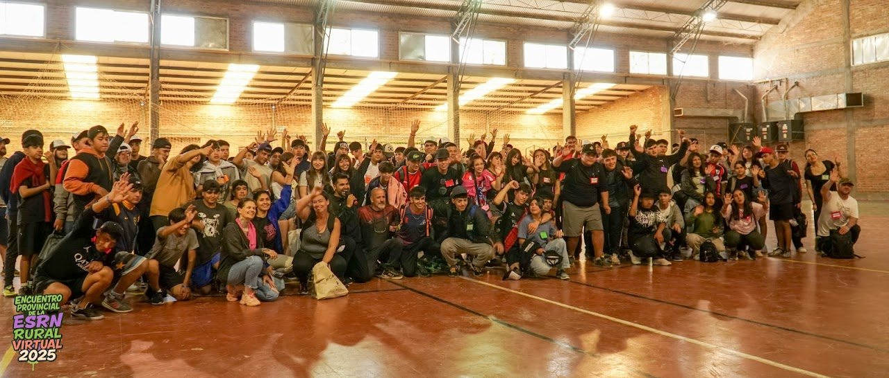
Día 1: Llegada y costanera
Un colectivo llevó a todas las sedes hasta la costa de Viedma. Lo primero fue un paseo por la costanera, donde el aire del mar y las primeras caras conocidas hicieron que la emoción comenzara a crecer. Después, un chapuzón en la pileta compartido por todos.
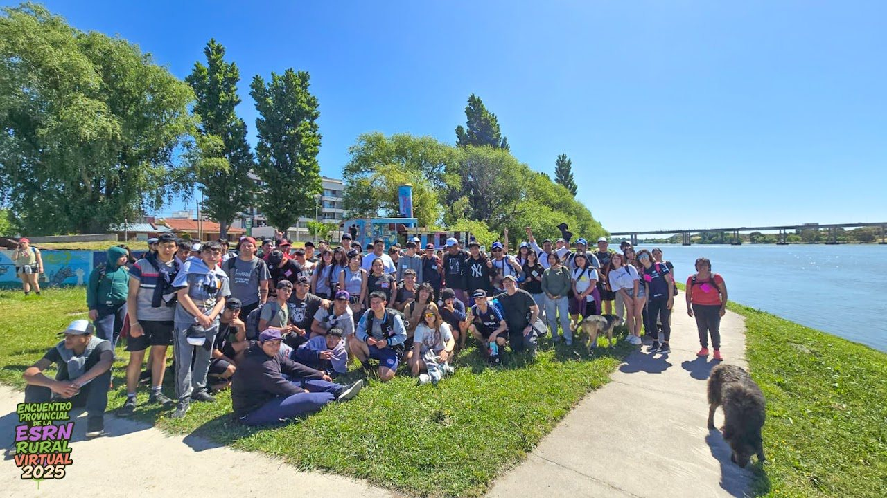
Día 2: Cine y escuela
El segundo día fue para recorrer Viedma. Un paseo exhaustivo terminó en la escuela Paulo Sexto, donde todos compartieron el almuerzo y pudimos ver la película Yamka y el espíritu del volcán gracias al cine móvil. Una experiencia que nos unió aún más.
Día 3: Playa y chorizada
Al tercer día, todas las sedes convivimos en la playa de El Cóndor. Minijuegos, actividades y el sol de la costa hicieron que todos se divirtieran como nunca. Para cerrar la noche, una gran chorizada donde todos compartimos y nos despedimos antes del último día.
Día 4: Centro Cultural y despedida
El cuarto y último día, la mañana fue para el Centro Cultural de Viedma, donde presenciamos varios bailes y coros de niños a temas populares. Luego, cada sede se fue a su lugar natal, llevando consigo recuerdos inolvidables.
Más de 120 personas demostraron que la convivencia, el respeto y la alegría son posibles cuando compartimos un mismo camino. Porque cada sede dejó un poco de sí misma en Viedma y El Cóndor, este encuentro no fue solo un viaje, sino el recordatorio de que unidos somos una gran comunidad.
Nuestro Mundial 2026
La experiencia del Mundial 2026 en la escuela.
Por Agustina Fernández · Priscila García Casanova · Deysi Taqui Cormar · Sede: Peñas Blancas · Noviembre 2026 · Escuela
El Mundial 2026 fue una experiencia increíble para toda la comunidad de Peñas Blancas.
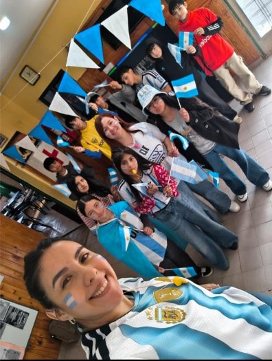
La preparación
Decoramos la escuela con banderas argentinas y preparamos todo para ver los partidos juntos. Fue una experiencia muy emotiva.
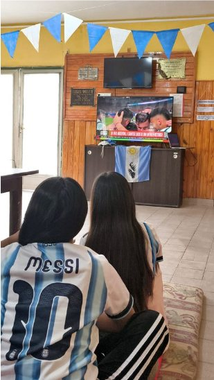
El día del partido
El 22 de junio vimos el partido todos juntos. La emoción se sentía en el aire. Cada gol era celebrado por toda la comunidad.
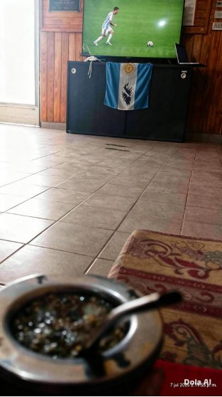
Los festejos
Después de cada victoria, salimos a festejar a las calles. Compartimos mates, abrazos y lágrimas de alegría.
El Mundial 2026 nos enseñó que el deporte une a las personas y crea lazos que duran toda la vida.
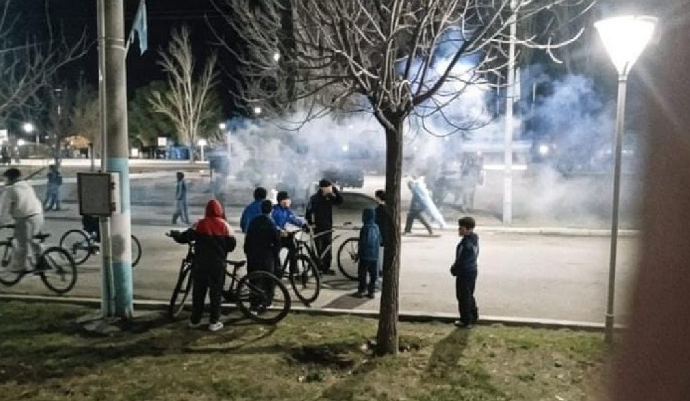
02 / 07
Ciencia y tecnología
Física, biología, ambiente y fútbol: investigaciones que nacen en el aula.
El Chip en la Cancha: la ciencia dentro de la pelota
¿Cómo saben los árbitros si una pelota cruzó la línea por un milímetro? Abrimos el balón para descubrir la física, la electrónica y la matemática que se esconden detrás de cada pase.
Por Julián Echegoy · Sede: Aguada de Guerra · Noviembre 2026 · Ciencia y tecnología
¿Alguna vez te preguntaste cómo hacen los árbitros para saber si una pelota cruzó la línea de gol por un milímetro, o si hubo un fuera de juego invisible al ojo humano? En el fútbol actual, las decisiones ya no dependen solo de la intuición de las personas. Hoy, el corazón del juego es tecnológico: las pelotas oficiales de los torneos más importantes llevan un sensor inteligente en su interior que revoluciona el arbitraje y la ciencia del deporte.
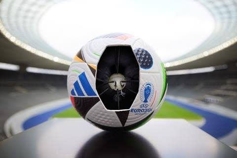
Conocer cómo funciona esta tecnología nos permite descubrir que una simple pelota es, en realidad, un complejo dispositivo científico. A continuación, abrimos el balón para explorar la física, la electrónica y la matemática que se esconden detrás de cada pase.
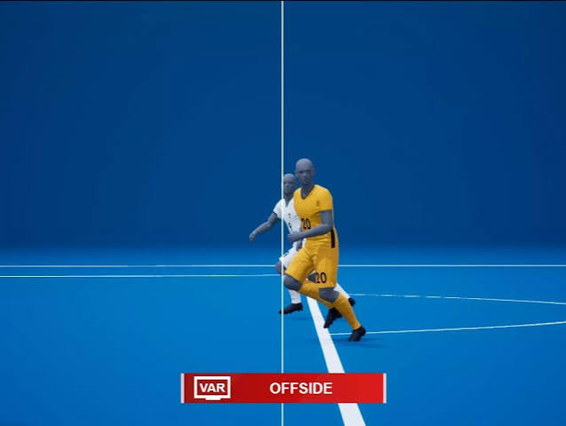
Tecnología invisible: el sensor CTR-CORE
En el centro geométrico de la pelota se suspende un pequeño chip mediante un sistema de tensores elásticos para que el peso no afecte su trayectoria. Este dispositivo contiene una Unidad de Medición Inercial (IMU) que envía datos de posición y movimiento a una velocidad asombrosa de 500 veces por segundo. Funciona con una pequeña batería recargable por inducción (sin cables) y transmite ondas de radiofrecuencia hacia las antenas instaladas alrededor de la cancha para rastrear el balón en tiempo real.
La física de los datos y el fuera de juego
Este chip trabaja en equipo con cámaras de alta velocidad distribuidas en el estadio. Cuando un jugador patea, el sensor detecta el impacto exacto (el milisegundo exacto del “contacto”). Al cruzar estos datos con los algoritmos informáticos, el sistema del VAR puede determinar si había una posición adelantada en el momento preciso del pase. Además, el chip mide la velocidad del disparo, la aceleración y las revoluciones por minuto del giro de la pelota, aplicando principios de cinemática y dinámica física.
Impacto en la salud y el rendimiento
Más allá de cobrar un gol, los datos del sensor se usan para la salud de los atletas. Al medir la fuerza de los impactos, los cuerpos médicos analizan el desgaste muscular y la potencia acumulada de los jugadores. Esto ayuda a diseñar entrenamientos personalizados, regular las cargas de esfuerzo físico para prevenir lesiones graves y planificar una nutrición celular adecuada para la recuperación del plantel.
Conclusión
La tecnología en la pelota nos demuestra que la ciencia no se queda encerrada en un laboratorio con tubos de ensayo, sino que rueda con nosotros en el patio y en la cancha. Analizar estas innovaciones en nuestra escuela nos invita a pensar cómo las herramientas digitales transforman nuestras actividades cotidianas, transformando la pasión del juego en una oportunidad para aprender y explorar el mundo técnico que nos rodea.
El partido por el ambiente
¿Alguna vez pensaste que una cancha de fútbol también puede ser un espacio para aprender a cuidar el ambiente?
Por Leandro Yanca · Milena Yanca · Alma Maidana · Leonardo Maidana · Sede: ESRN Rural Anexo 21 — Río Chico · Noviembre 2026 · Ciencia y tecnología
A partir de esta pregunta, nos propusimos realizar una actividad diferente en la clase de segundas lenguas: construir una maqueta de una cancha de fútbol como parte de “El partido por el ambiente”.
Construimos nuestra maqueta
Durante esta experiencia trabajamos en equipo, utilizamos nuestra creatividad y reflexionamos sobre el cuidado de nuestro entorno. A través de la construcción de nuestra maqueta, descubrimos que el deporte también puede ser una oportunidad de aprender, compartir ideas y promover acciones que ayuden a proteger el ambiente. En nuestra revista digital queremos compartir nuestro trabajo, mostrar cómo fue el proceso de construcción y contar qué aprendimos durante esta experiencia.
Algunos de los materiales que utilizamos fueron: cartón, cinta de papel, plasticola, hojas rayadas y, por último, colores.
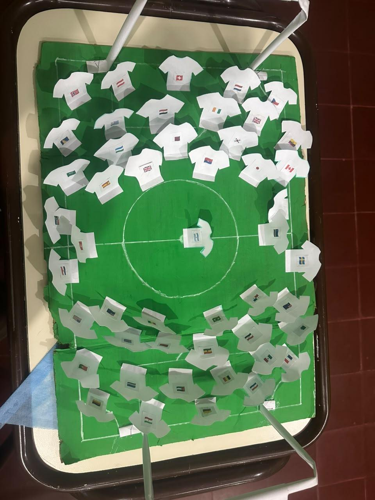
Aprender a cuidar el ambiente
Conocer más sobre las canchas de fútbol que existen en nuestro planeta es el primer paso para aprender a cuidar nuestro ambiente. Es importante reflexionar sobre lo que sucede en estos espacios y pensar qué podemos hacer para evitar seguir contaminando y dañando nuestro planeta.
De esta manera, descubrimos que una cancha de fútbol también puede convertirse en un espacio para aprender a cuidar el ambiente y pensar juntos cómo podemos protegerlo. Podemos mantener la cancha limpia, separar los residuos, reciclar y evitar desperdiciar agua. Así, mientras jugamos, compartimos y nos divertimos, también aprendemos a respetar, cuidar y proteger nuestro planeta.
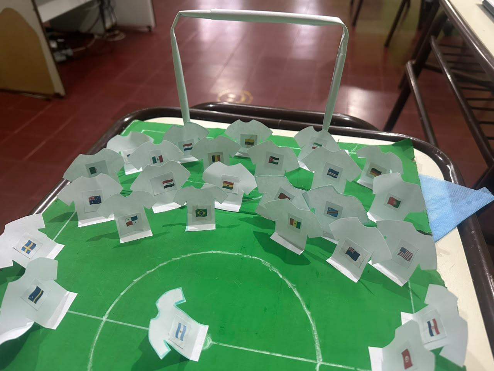
Ser cuidadosos con nuestras canchas siempre nos ayudará a jugar, compartir y divertirnos de manera más tranquila, segura y saludable. Cuidar estos espacios es una responsabilidad de todos. Porque cuando cuidamos nuestra cancha, también cuidamos a quienes la disfrutan y a nuestro planeta. Cada pequeña acción cuenta.
¿Cómo es la potabilización en el paraje Aguada Guzmán?
Salimos al paraje para saber de dónde viene el agua que consumimos todos los días en nuestras casas… y descubrimos que la comunidad coopera entre todos para que no nos falte.
Por Samira Curaqueo · Milagros Cruz Pérez · Sede: Aguada Guzmán · Noviembre 2026 · Ciencia y tecnología
En el paraje Aguada Guzmán, el agua que utiliza la población se obtiene de una perforación subterránea. Para que pueda ser utilizada de manera segura, pasa por un proceso de potabilización mediante una planta de ósmosis inversa.
Este sistema permite tratar el agua y reducir la cantidad de sales y otras sustancias presentes en ella, logrando un agua adecuada para el consumo.
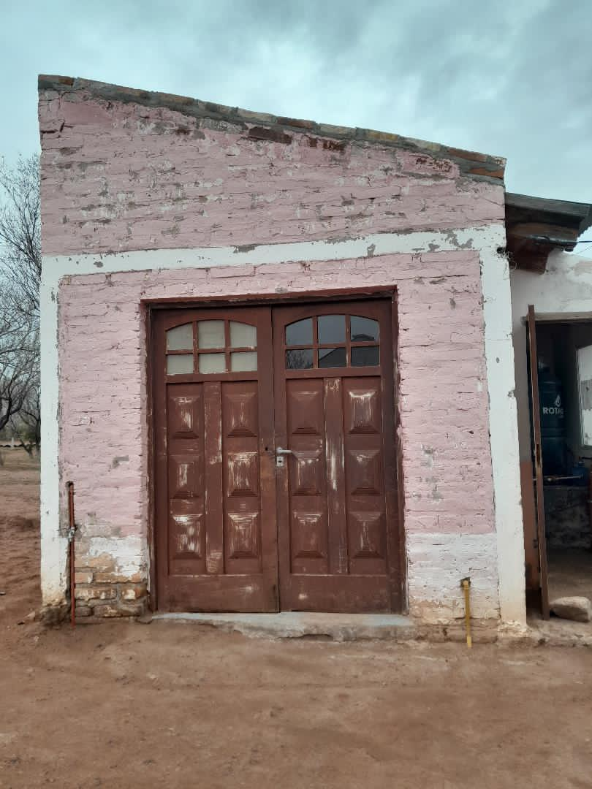
¿De dónde proviene el agua?
El agua proviene del subsuelo, a través de una perforación y cisterna. Luego es conducida hasta la planta de tratamiento, donde comienza el proceso de potabilización.
El agua subterránea es muy importante para las comunidades rurales: en muchos lugares no existen grandes redes de agua provenientes de ríos o lagos, por eso en varios pueblos hay una perforación subterránea de donde sale agua constantemente.
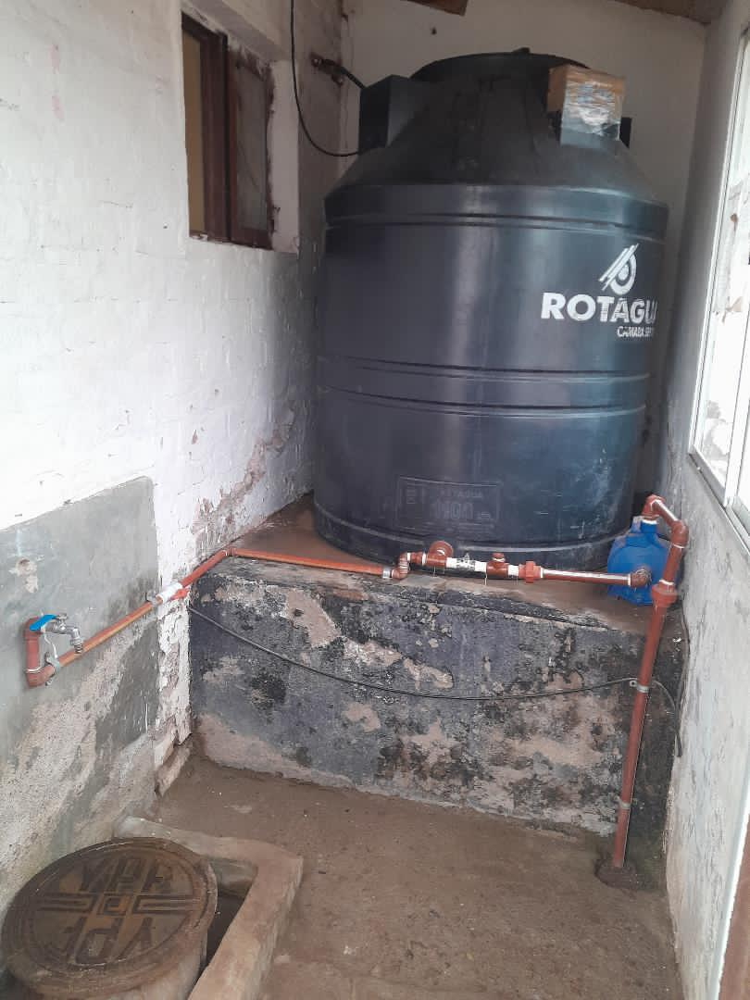
¿Qué es la ósmosis inversa?
La ósmosis inversa es un método de tratamiento del agua que utiliza una membrana especial para separar las sales, los minerales y otras sustancias. De esta manera, el agua pasa por diferentes etapas de tratamiento antes de ser almacenada y distribuida para su utilización. Con esta planta cuenta el paraje en la actualidad.
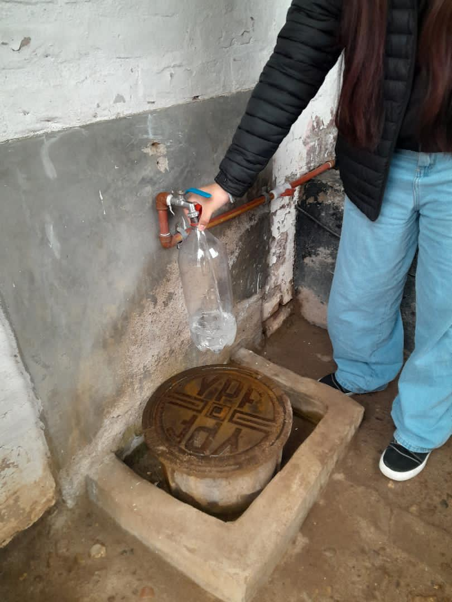
Cuidamos el agua que es utilizada por el pueblo
De esta casilla de abastecimiento público es donde saca agua la comunidad para consumir y almacenar en sus casas, ya que el agua que sale en los hogares de la gente es salada y no se puede consumir de forma natural.
La gente de esta comunidad coopera entre todos para mantener este espacio público limpio y seguro, para que no nos falte el agua.
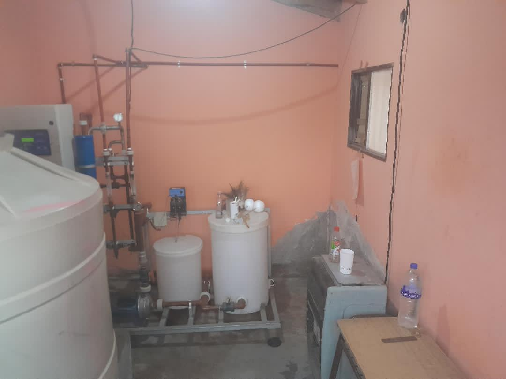
En la fotografía se observa parte de la instalación utilizada para el tratamiento del agua y purificación, para que el agua ya se pueda consumir: la planta de ósmosis inversa.
¡Gol de Ciencia! La química detrás del Mundial
La química está en el cuerpo de los jugadores, en los materiales y hasta en la Copa del Mundo.
Por Estefanía Manuel · Sede: Río Chico · Noviembre 2026 · Ciencia y tecnología
El Mundial de fútbol es uno de los eventos deportivos más importantes del mundo. Pero detrás de cada gol, cada carrera y cada esfuerzo de los jugadores también se encuentra la ciencia.
Aunque el fútbol parece ser solamente un deporte, muchos procesos químicos están presentes durante un partido y ayudan a que los jugadores puedan dar lo mejor de sí.
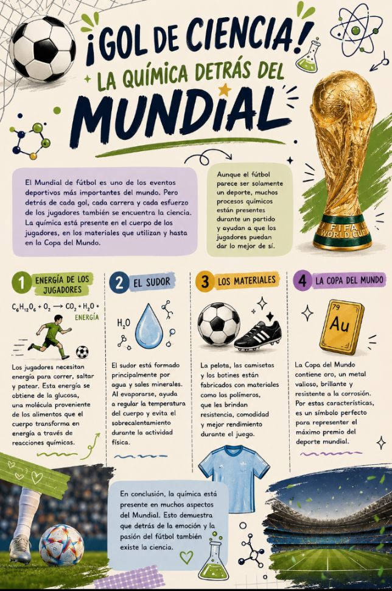
1. La energía de los jugadores
Los jugadores necesitan energía para correr, saltar y patear. Esta energía se obtiene de la glucosa, una molécula proveniente de los alimentos que el cuerpo transforma en energía a través de reacciones químicas.
2. El sudor
El sudor está formado principalmente por agua y sales minerales. Al evaporarse, ayuda a regular la temperatura del cuerpo y evita el sobrecalentamiento durante la actividad física.
3. Los materiales
La pelota, las camisetas y los botines están fabricados con materiales como los polímeros, que les brindan resistencia, comodidad y mejor rendimiento durante el juego.
4. La Copa del Mundo
La Copa del Mundo contiene oro (Au), un metal valioso, brillante y resistente a la corrosión. Por estas características, es un símbolo perfecto para representar el máximo premio del deporte mundial.
En conclusión, la química está presente en muchos aspectos del Mundial. Esto demuestra que detrás de la emoción y la pasión del fútbol también existe la ciencia.
El cuidado del agua
Por qué debemos cuidarla y qué podemos hacer desde nuestras casas para evitar su desperdicio.
Por Suazo Stefania · Sede: Valle Verde A32 · Noviembre 2026 · Ciencia y tecnología
¿Alguna vez pensaste cuánta agua usamos en nuestra vida cotidiana? El agua es un recurso vital, pero no siempre la cuidamos como debemos.
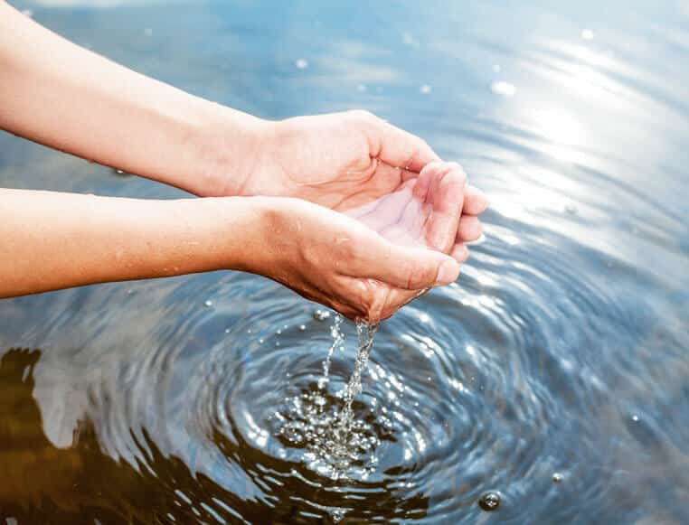
¿Por qué debemos cuidar el agua?
El agua es esencial para la vida. La usamos para beber, cocinar, bañarnos, lavar y muchas cosas más. Pero el agua no es infinita, y en muchas comunidades rurales es difícil de obtener. Por eso, debemos valorarla y cuidarla.
¿Qué podemos hacer desde casa?
Cerrar la canilla mientras nos lavamos los dientes o las manos. No dejar que el agua corra sin necesidad. Reparar las fugas de agua en las cañerías. Usar menos agua al lavar los platos o la ropa.
Cuidar el agua en la comunidad
No tirar basura ni productos químicos al río o al arroyo. Mantener limpios los lugares donde se encuentra el agua. Participar de campañas de cuidado del agua en la escuela y la comunidad.
El agua es un recurso que debemos cuidar todos los días. Cada pequeña acción cuenta para que todos puedan acceder a agua limpia y segura.
— Suazo Stefania. Sede: Valle Verde A32.
La tecnologia en el Mundial 2026
Camaras corporales, sensores, inteligencia artificial y GPS: la tecnologia que uso el arbitraje en el Mundial.
Por Hector Leonel Chico - Adrian Mateo Lopez · Sede: Aguada de Guerra · Noviembre 2026 · Ciencia y tecnología
En el Mundial 2026, los árbitros utilizaron un sistema avanzado de tecnología que incluye cámaras corporales, sensores y conexión permanente con inteligencia artificial.
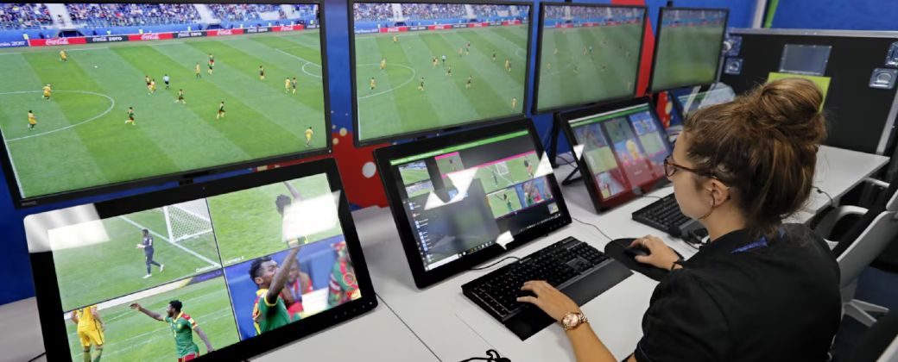
Cámaras corporales
Una cámara corporal compacta integrada con el uniforme del juez principal, estabilizada por inteligencia artificial. También usaban auriculares y micrófonos incorporados y relojes inteligentes para mantener contacto directo con el VAR.
GPS y dispositivos corporales
Dispositivo de posicionamiento global para registrar el movimiento del juez en tiempo real. Esta tecnología permite que las decisiones arbitrales sean más precisas y rápidas.
Inteligencia artificial
El sistema de IA analiza las imágenes de las cámaras y los datos del GPS para detectar jugadas polémicas como el fuera de juego, las manos y las faltas. Esto ayuda a los árbitros a tomar mejores decisiones.
La tecnología en el Mundial demuestra que el fútbol moderno combina pasión deportiva con innovación científica, haciendo que el juego sea más justo y emocionante para todos.
La contaminacion
Un problema que nos afecta a todos: como la contaminacion afecta el agua, el aire y el suelo.
Por Guadalupe Centeno · Sede: Lago Pellegrini · Noviembre 2026 · Ciencia y tecnología
La contaminación es un problema que nos afecta a todos. ¿Alguna vez pensaste cómo afecta la contaminación al lugar donde vivimos? La contaminación está presente en nuestro ambiente y puede afectar el agua, el aire y el suelo.
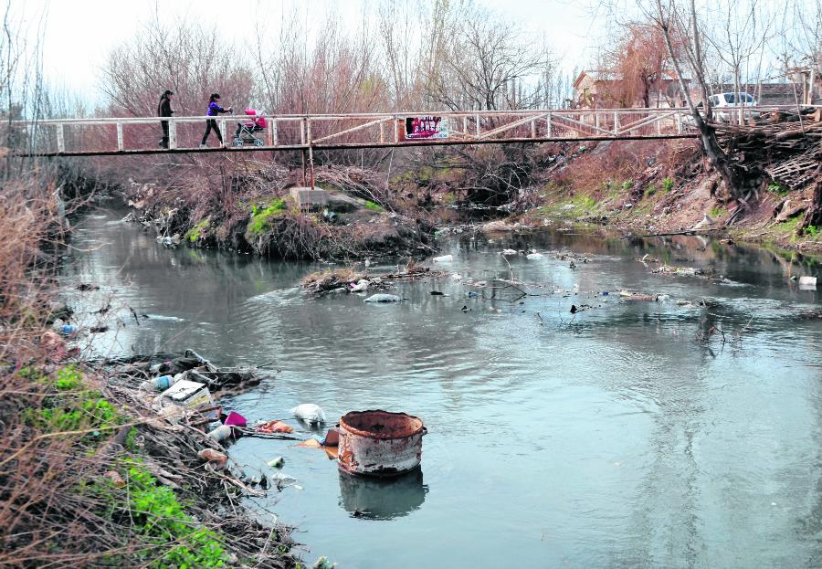
Causas de la contaminación
Una de las principales causas es la acumulación de residuos. Cuando la basura se arroja en lugares incorrectos, puede contaminar el suelo y el agua. También la contaminación del aire puede producirse por el humo de los vehículos, las industrias y la quema de residuos.
¿Qué podemos hacer?
Para cuidar nuestro ambiente podemos separar los residuos, evitar tirar basura en la calle, reutilizar materiales y reducir el uso innecesario de productos descartables. También es importante cuidar el agua y los espacios naturales de nuestra comunidad.
La educación es clave
La educación y la participación de todas las personas son fundamentales para generar hábitos más responsables. Si cada uno aporta desde su lugar, podemos lograr cambios positivos en nuestro entorno.
La contaminación es un problema que nos involucra a todos. Cuidar el ambiente no significa hacer grandes cosas, sino comenzar con pequeñas acciones todos los días. ¡Cuidar el planeta es cuidar nuestro futuro!
¿Qué pasaría si un día nos quedáramos sin agua?
El agua es muy importante para nuestra vida. ¿Qué pasaría si un día faltara?
Por Julieta Medrano · Sede: Lago Pellegrini · Noviembre 2026 · Ciencia y tecnología
¿Alguna vez pensaste qué pasaría si un día abrieras la canilla y no sale agua?
El agua es muy importante para nuestra vida, ya que la usamos todos los días para tomar, cocinar, bañarnos y muchas otras cosas. En este artículo vamos a hablar sobre por qué tenemos que cuidarla y qué pasaría si algún día faltara.
A veces usamos el agua sin pensar que es un recurso que no se termina nunca. Por eso, es importante conocer para qué la necesitamos y aprender algunas formas sencillas de cuidarla.
La importancia del agua
El agua es necesaria para todos los seres vivos. Las personas la necesitamos para hidratarnos, cocinar, bañarnos y mantener nuestra higiene. También es importante para los animales y las plantas, ya que sin agua no podrían vivir.
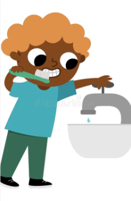
¿Qué pasaría si faltara?
Si algún día nos quedáramos sin agua, nuestra vida cambiaría mucho. No podríamos tomar agua, preparar alimentos ni realizar las actividades que hacemos todos los días. Además, las plantas se secarían y muchos animales tendrían dificultades para sobrevivir.
Cómo cuidarla
Es importante no desperdiciarla. Podemos cuidarla cerrando la canilla mientras nos lavamos los dientes, tomando duchas más cortas y evitando dejar correr el agua sin necesidad. Aunque parezcan acciones pequeñas, entre todos podemos hacer una gran diferencia.
El problema de la contaminación
Cuando se tiran residuos, basura o sustancias contaminantes en los ríos, lagos y mares, el agua puede dejar de ser segura para las personas, los animales y las plantas. Por eso, también es importante no tirar basura en lugares donde pueda llegar al agua y cuidar los espacios naturales.
El agua es un recurso muy importante para la vida y debemos cuidarla todos los días. Cada pequeña acción cuenta y, si todos ponemos de nuestra parte, podemos evitar desperdiciarla. ¡Cuidar el agua es cuidar nuestro futuro!
El monóxido de carbono: un enemigo invisible
¿Por qué decimos que el monóxido de carbono es un enemigo invisible en nuestro hogar? ¿Qué artefactos debemos tener en cuenta para prevenir desgracias?
Por Fatima Hernández · Erika Pil · Sede: Aguada Cecilio · Noviembre 2026 · Ciencia y tecnología
Estar más prevenidos ante el gas inodoro e incoloro es el primer paso para cuidar de nuestra salud y bienestar. A continuación, daremos a conocer información importante sobre la prevención del monóxido de carbono.
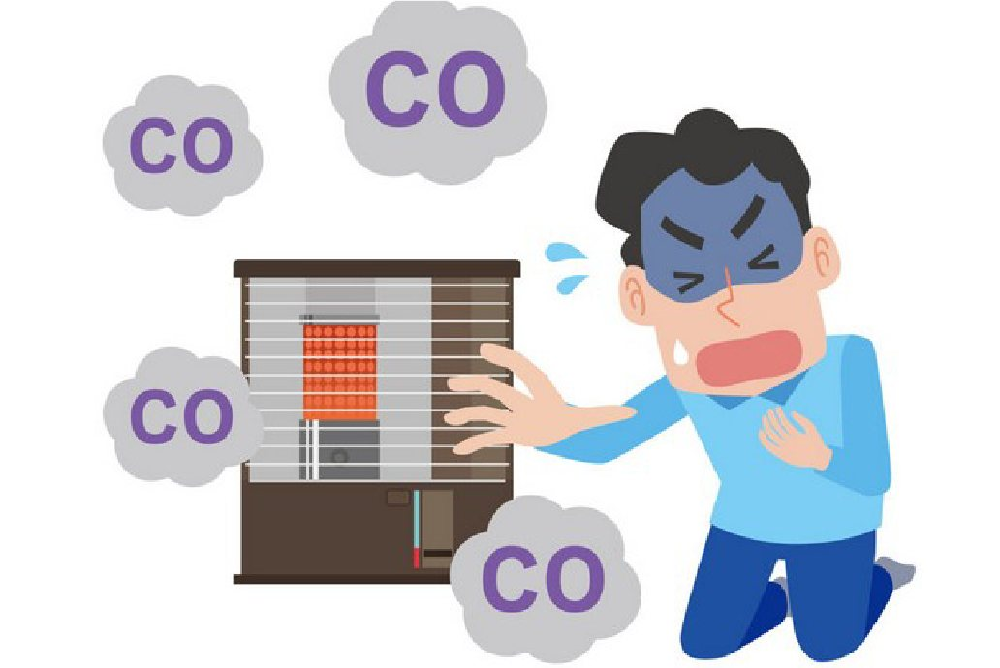
Un enemigo invisible
El monóxido de carbono es un enemigo invisible, ya que no tiene olor, no tiene sabor ni color. Las personas que se calefaccionan con hornos y hornallas, calefactores y estufas están más propensas a inhalar monóxido de carbono y podrían estar en peligro.
Síntomas por el monóxido
Dolor de cabeza, mareos, náuseas, debilidad y visión borrosa.
Precauciones que debes tomar
No calefaccionarse con hornos u hornallas, limpiar el calefactor cada un año, tener la rejilla ventilada y no usar estufas en espacios cerrados. En el caso de que estés en esa situación, debes abrir ventanas y puertas, salir afuera, apagar los artefactos y llamar a emergencias.
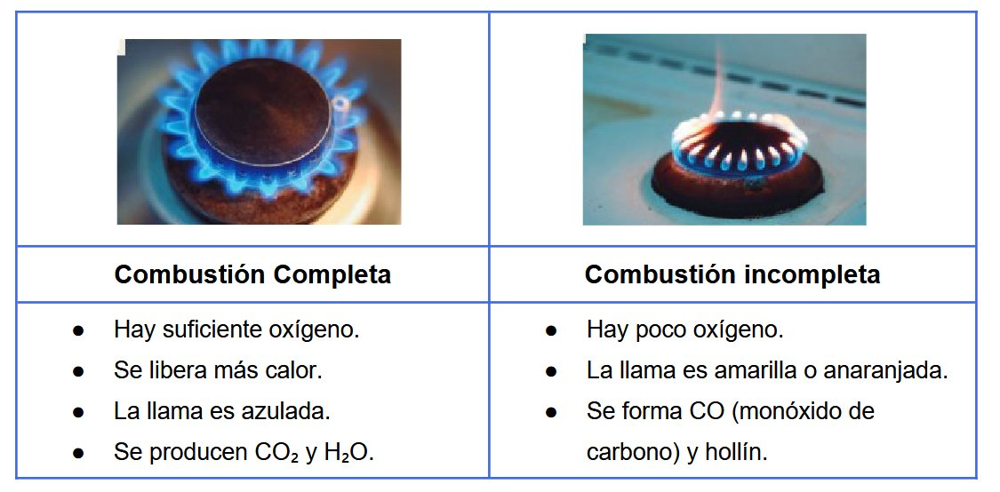
Estar atentos ante el monóxido de carbono no es vivir asustados, sino cuidar mejor nuestra vida cada día. Estar informados e informar a otras personas hace que todos vivamos tranquilos y seguros: nos ayudamos entre todos.
¡No a la basura...!
La basura que vemos en rutas y bardas tiene causas concretas: conocelas y aplicala los tips para mejorar nuestro ambiente.
Por Giuliano Prospitti · Sahira Contreras · Valentino Velazquez Hueravilo · Sede: Lago Pellegrini · Noviembre 2026 · Ciencia y tecnología
¿No te molesta la basura a tu alrededor?
Cada vez que vas por la ruta o caminas por las bardas siempre te encontrás con basura. En este artículo vamos a investigar sus causas, sus consecuencias y qué podemos hacer con este problema.
Si querés cambiar esta realidad, a continuación te dejamos tips para mejorar nuestro ambiente.
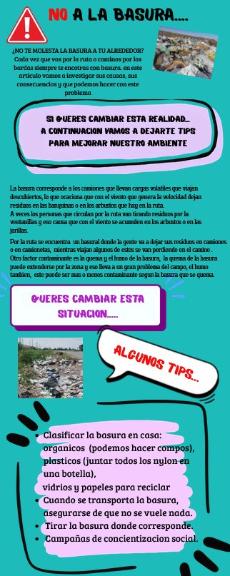
¿De dónde viene la basura?
La basura corresponde a los camiones que llevan cargas volátiles que viajan descubiertos: con el viento que genera la velocidad, los residuos quedan en las banquinas o en los arbustos de la ruta.
A veces las personas que circulan por la ruta van tirando residuos por las ventanillas, y eso hace que con el viento se acumulen en los arbustos o en las jarillas.
Por la ruta se encuentra un basural donde la gente va a dejar sus residuos en camiones o camionetas, y mientras viajan algunos se van perdiendo en el camino.
La quema de basura
Otro factor contaminante es la quema y el humo de la basura. La quema puede extenderse por la zona y eso lleva a un gran problema del campo; el humo puede ser más o menos contaminante según la basura que se quema.
¿Querés cambiar esta realidad?
Clasificar la basura en casa: orgánicos (podemos hacer compost), plásticos (juntar todo el nylon en una botella), vidrios y papeles para reciclar.
Asegurarse de que, al transportar la basura, no se vuele nada.
Tirar la basura donde corresponde.
Hacer campañas de concientización social.
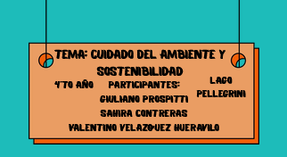
La primera ley de Newton
Todo permanece quieto, salvo que una fuerza lo cambie. De esto tratará el siguiente artículo.
Por Estudiantes · Sede: Peñas Blancas · Noviembre 2026 · Ciencia y tecnología
La ley de inercia es uno de los principios fundamentales de la física que permite comprender cómo se comportan los objetos cuando no actúan fuerzas sobre ellos y es la base para estudiar el movimiento en mecánica.
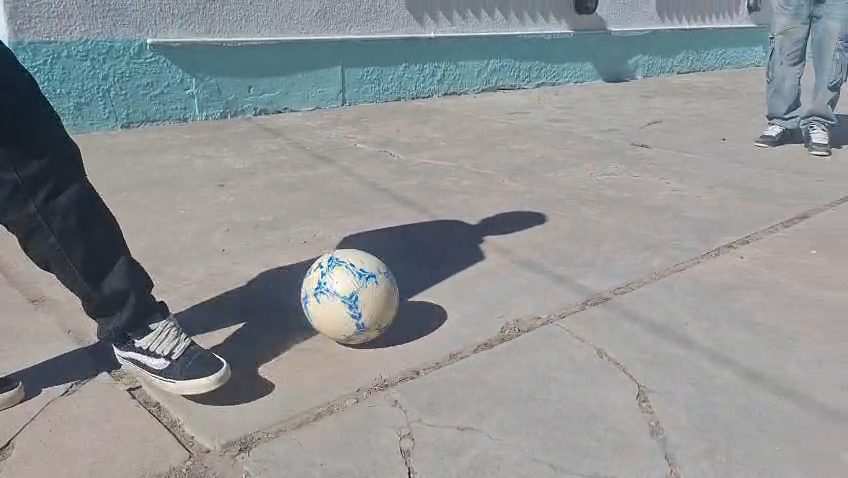
¿Qué es la ley de inercia?
Esta ley dice que si una fuerza actúa, el cuerpo cambia su velocidad o dirección.
Un objeto quieto se queda quieto y un objeto en movimiento sigue moviéndose en línea recta y a la misma velocidad. Esto pasa siempre, a menos que una fuerza de afuera actúe sobre él.
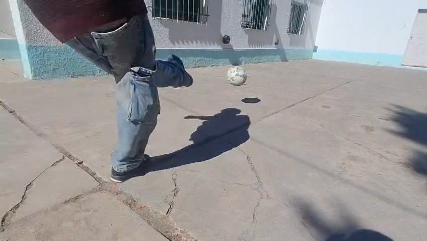
¿Dónde se aplica?
La inercia es la tendencia de los objetos a mantener su estado de reposo o de movimiento a menos que una fuerza externa actúe sobre ellos. Se observa en situaciones comunes como el frenado brusco de un auto, donde el cuerpo se va hacia adelante, o cuando un objeto quieto en una mesa no se mueve solo.
Importancia
Esta ley es fundamental en la mecánica clásica y sienta las bases para comprender el comportamiento de los objetos bajo la influencia de las fuerzas, siendo crucial para la física y la ingeniería.
Para demostrar esta ley, les dejamos el video del experimento de la ley de la inercia.
Latido del equilibrio ambiental en Naupa Huén
El ambiente es el espacio donde vivimos. Cuidarlo es responsabilidad de todos.
Por Nicolás Bustamante · Sede: Naupa Huén · Noviembre 2026 · Ciencia y tecnología
El ambiente es el espacio donde vivimos, donde se encuentran los seres vivos, el agua, el suelo, el aire y las plantas. Por eso es muy importante cuidarlo y protegerlo de la contaminación.
¿Por qué es importante cuidar el ambiente?
Para comprender mejor la importancia del cuidado ambiental, a continuación veremos algunas acciones que podemos realizar todos los días.
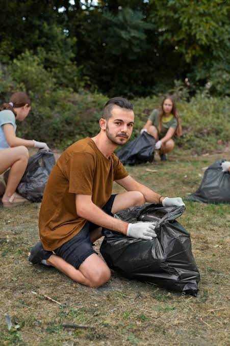
¿Qué podemos hacer?
Una de las formas más importantes de cuidar el ambiente es reciclar. Separamos los residuos orgánicos de los inorgánicos y colocamos los plásticos, papeles y vidrios en los contenedores correspondientes.
Además, debemos ahorrar energía apagando las luces y los aparatos electrodomésticos cuando no los usamos. También es importante ahorrar agua cerrando bien las canillas.
Plantar árboles es otra forma de cuidar el ambiente. Los árboles nos dan oxígeno y ayudan a reducir la contaminación del aire.
En conclusión, cuidar el ambiente es responsabilidad de todos. Con pequeñas acciones podemos hacer una gran diferencia para nuestro planeta.
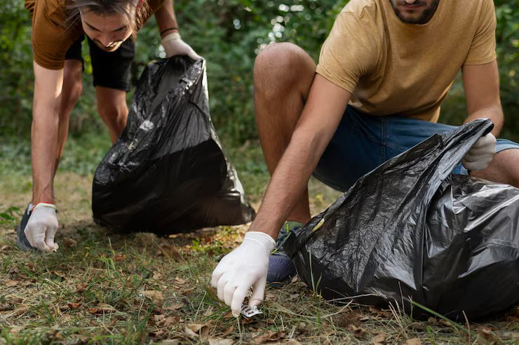
Acciones pequeñas para un mundo grande
Los microbasurales se han vuelto muy comunes en nuestra región: qué son, qué daños causan y cómo podemos evitarlos.
Por Lauti, Fran y Gabi · Sede: Peñas Blancas · Noviembre 2026 · Ciencia y tecnología
¿Alguna vez te has preguntado en qué afectan los microbasurales?
Los microbasurales se han vuelto muy comunes últimamente en nuestra región. En este artículo vamos a explorar sus consecuencias y qué podemos hacer para prevenirlos.
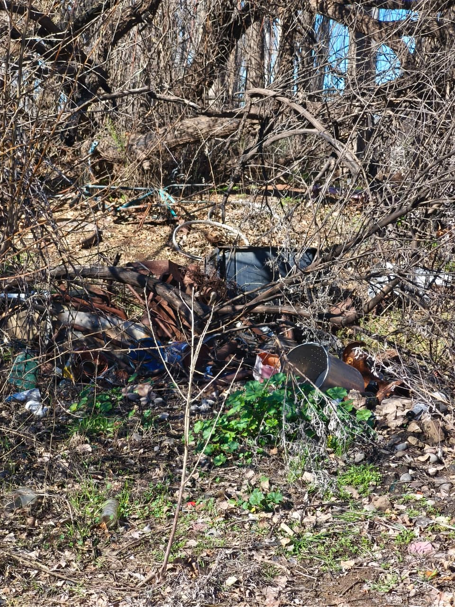
¿Qué son los microbasurales?
Un microbasural es un terreno baldío o un espacio público de menos de una hectárea donde se arroja basura de forma ilegal y desorganizada. Conocer cómo se forman es el primer paso para cuidar nuestro entorno.
¿Qué daños causan?
Los daños que generan son ambientales: contaminan el suelo y el agua subterránea con líquidos tóxicos llamados lixiviados.
Riesgo para la salud: atraen ratas, insectos y otros animales que transmiten enfermedades.
Problemas urbanos: generan malos olores y arruinan el paisaje.
¿Cómo podemos evitarlo?
Reciclar y organizar la basura en casa para reducir el volumen en la calle.
Denunciar: avisar a las autoridades locales si se detecta a personas arrojando basura en lugares prohibidos.
Puede que evitar un microbasural para algunos sea una acción pequeña, pero para otros, para nosotros, es una acción grande.
Cuidado del ambiente
Acciones simples que podemos hacer desde casa y desde la escuela para tener un planeta más limpio.
Por Luciana Sánchez · Sede: Chelforo · Noviembre 2026 · Ciencia y tecnología
¿Por qué es importante cuidar el ambiente?
El cuidado del ambiente es muy importante para todos, porque vivimos en el mismo planeta. Hoy en día hay problemas como la contaminación, el cambio climático y la basura. Por eso es importante cuidar la naturaleza y usar los recursos de manera responsable para tener un lugar mejor donde vivir.
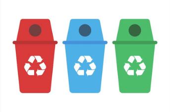
Acciones cotidianas y simples
Cuidar el ambiente es algo que todos podemos hacer desde nuestra casa o la escuela.
Podemos realizar acciones simples como separar la basura, reciclar, ahorrar agua y apagar las luces cuando no las necesitamos.
También podemos evitar usar tanto plástico y reutilizar las cosas antes de tirarlas.
Es fundamental cuidar los árboles, las plantas y los animales, y no tirar basura en lugares donde no corresponde.
Caminar, andar en bicicleta o usar el transporte público también ayuda a disminuir la contaminación.
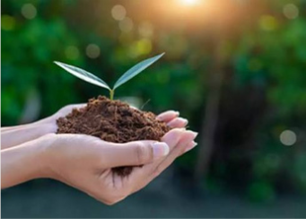
Si todos hacemos un poco, podemos lograr un cambio importante. Aunque algunas acciones parezcan pequeñas, ayudan a cuidar nuestro planeta y a tener un ambiente más limpio para todos.
Prevención y concientización comunitaria
¿Qué es el monóxido? Un gas invisible y peligroso que podemos prevenir entre todos.
Por Jaz y Kate · Sede: Peñas Blancas · Noviembre 2026 · Ciencia y tecnología
El monóxido de carbono es un gas altamente tóxico, incoloro, inodoro y sin sabor, que se produce por la combustión incompleta de materiales como gas, madera, carbón o queroseno. Se genera en artefactos de calefacción o cocina (estufas, calefones, calderos, cocina o brasero) en mal estado o con mala ventilación.
¿Cómo afecta al cuerpo?
Al respirar, el gas pasa a la sangre y se une a la hemoglobina, lo que impide que el oxígeno llegue a los órganos vitales. Entre los síntomas de intoxicación se encuentran el dolor de cabeza, los mareos y las náuseas.
El uso del zeppelin en nuestro paraje
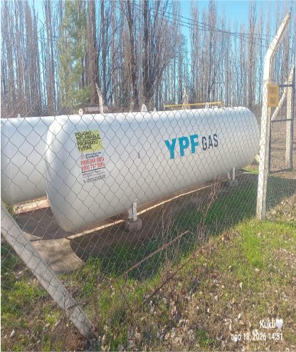
Tanque zeppelin de YPF GAS del paraje.
En nuestro paraje utilizamos zeppelins que se extienden desde el tanque exterior hasta los artefactos de los hogares, que almacenan gas licuado. A diferencia de las ciudades con gas natural, estos tanques son físicamente más peligrosos ante una fuga debido a su densidad.
Consejos útiles para prevenir accidentes
Si sentís olor a gas, llamá a un gasista.
Ventilá diariamente tu casa (abrí ventanas y puertas).
Cerrá las llaves de paso de los artefactos.
Evitá hacer fuego y no fumes.
Si te vas, cerrá las llaves de gas.
Hasta acá llegamos, por eso tenemos que tener cuidado con el gas, que produce muchos accidentes.
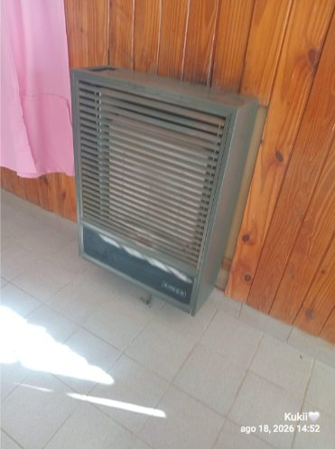
Artefacto de calefacción con revestimiento de madera.
Un pequeño descanso, una gran importancia
En este artículo hablamos sobre la pausa de hidratación y la importancia que tiene. Tiene múltiples beneficios aunque su duración es corta.
Por Tomás · Ramiro · Jonathan · Sede: Peñas Blancas · Noviembre 2026 · Ciencia y tecnología
¿Qué es la pausa de hidratación?
La pausa de hidratación en el fútbol dura exactamente 3 minutos de silbato a silbato y se realiza dos veces por partido reglamentario.
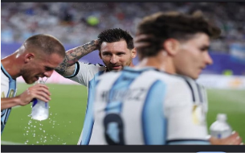
Futbolistas hidratándose en pleno partido.
Beneficios para la salud
La pausa de hidratación sirve para proteger la salud de los deportistas durante el partido de alta intensidad. Permite bajar la temperatura del cuerpo, reponer líquidos y electrolitos, prevenir golpes de calor y retrasar la fatiga física.
¿Qué ocurre si no se realiza?
En contextos de alta exigencia física y calor, el cuerpo sufre un aumento rápido de la temperatura interna y una pérdida excesiva de líquidos. Esto provoca fatiga prematura, calambres musculares y una caída en el rendimiento físico y mental.
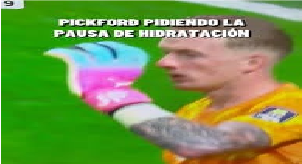
El arquero Pickford solicitando la pausa de hidratación.
Nuestra opinión
En nuestra opinión, la pausa de hidratación es muy importante para cuidar la salud de los jugadores y para prevenir lesiones graves y calambres musculares.
Las células
Todos estamos formados por células: la unidad básica de la vida.
Por Gabriel Loncoman · Sede: Mencué · Noviembre 2026 · Ciencia y tecnología
¿Alguna vez te preguntaste qué tenemos en común los seres humanos, los animales y las plantas? Aunque somos muy diferentes, todos estamos formados por células.
En este artículo vamos a conocer qué son las células, cuáles son sus partes y por qué son tan importantes para los seres vivos.
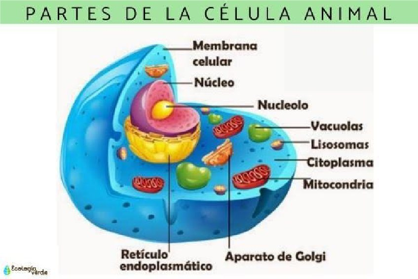
¿Qué es la célula?
Es la unidad básica de todos los seres vivos. Algunos organismos están formados por una única célula, mientras que otros, como los seres humanos, los animales y las plantas, están formados por muchas.
Tipos de células
Existen dos grandes tipos: procariota y eucariota. Las células procariotas son más simples y no poseen un núcleo definido. Las células eucariotas, en cambio, tienen un núcleo donde se encuentra el material genético.
Diferencias entre célula animal y vegetal
Las células animales y vegetales son eucariotas, pero presentan algunas diferencias. La célula vegetal posee una pared celular y cloroplastos, que le permiten realizar la fotosíntesis. La célula animal no tiene estas estructuras.
Partes principales de una célula
Membrana celular: controla el ingreso y la salida de sustancias.
Citoplasma: aquí se encuentran las diferentes estructuras celulares.
Núcleo: contiene el material genético y dirige muchas de las actividades de las células.
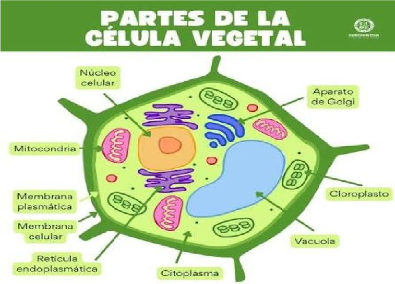
Funciones
Las células cumplen funciones vitales, como obtener energía, crecer, reproducirse y responder a diferentes estímulos. Por eso, aunque son microscópicas, tienen una enorme importancia.
Las células son pequeñas, pero cumplen funciones fundamentales para todos los seres vivos. Estudiarlas nos ayuda a comprender cómo funciona la vida desde su unidad más básica.
Cuidar el ambiente también está en nuestras manos
Qué problemas ambientales nos afectan y qué acciones sencillas podemos realizar todos los días, también desde la escuela.
Por Milena Kral · Sede: Lago Pellegrini · Noviembre 2026 · Ciencia y tecnología
¿Alguna vez pensaste qué pasaría si todos dejáramos de cuidar el ambiente? El planeta nos brinda agua, aire, alimentos y muchos recursos que necesitamos para vivir. Sin embargo, nuestras acciones pueden afectar de manera positiva o negativa a la naturaleza.
Por eso, conocer los problemas ambientales y aprender cómo podemos prevenirlos es un paso importante para cuidar nuestro entorno. A continuación, veremos algunas acciones sencillas que podemos realizar todos los días.
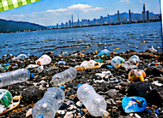
Contaminación
Uno de los principales problemas ambientales es la contaminación. La basura que arrojamos en lugares incorrectos, el exceso de plástico, el humo de los vehículos y la contaminación del agua pueden perjudicar a los animales, las plantas y también a las personas.
Reducir, reutilizar y reciclar
Una forma de ayudar es reducir la cantidad de residuos que producimos. Podemos reutilizar objetos, separar los residuos y reciclar materiales como papel, cartón, vidrio y plástico.
Cuidemos el agua
Algunas acciones simples son cerrar la canilla mientras nos cepillamos los dientes, evitar dejarla correr innecesariamente y no arrojar basura ni productos contaminantes en ríos, lagos o desagües.
Protejamos los espacios verdes
Plantar árboles, no dañar las plantas y mantener limpios los parques y plazas ayuda a conservar la biodiversidad y mejora la calidad del aire.
¿Qué podemos hacer desde la escuela?
Además, desde la escuela podemos realizar campañas de concientización, colocar recipientes para separar residuos y compartir información con nuestras familias y con la comunidad.
Campañas de concientización: Informar y sensibilizar a nuestra comunidad sobre la importancia de cuidar el ambiente.
Separar residuos: Colocar recipientes diferenciados para papel, plástico, vidrio y orgánicos en la escuela.
Compartir información: Llevar lo aprendido a nuestras familias y vecinos para que cada vez seamos más personas comprometidas.
Juntos podemos lograr un ambiente más limpio y saludable para todos. El planeta es nuestro hogar, cuidémoslo hoy para tener un mejor mañana.
Cierre
Cuidar el ambiente no depende solamente de grandes acciones. Cada pequeño cambio puede hacer una diferencia. Si aprendemos a utilizar los recursos de manera responsable y ayudamos a que otras personas también lo hagan, estaremos colaborando para construir un ambiente más limpio y saludable para todos.
Cuidemos nuestro ambiente
Reciclar, ahorrar y reducir: cinco ideas para cuidar el ambiente todos los días, y entenderse con la sostenibilidad.
Por Saira Linares · Sede: Lago Pellegrini · Noviembre 2026 · Ciencia y tecnología
Responsabilidad compartida
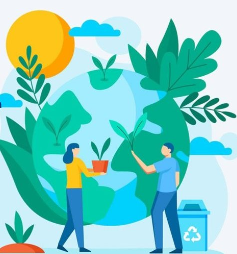
Cuidar el ambiente es responsabilidad de todos. La sostenibilidad busca proteger los recursos naturales y satisfacer nuestras necesidades sin perjudicar a las futuras generaciones. Con acciones simples, como reciclar, ahorrar agua y energía y reducir los residuos, podemos ayudar a construir un planeta más saludable.
Importancia del cuidado
Cuidar el ambiente es fundamental para lograr una vida más saludable y un futuro mejor. Por eso, es importante relacionar el cuidado de la naturaleza con la sostenibilidad, buscando formas de utilizar los recursos de manera responsable y reducir el impacto que generamos en el planeta.
Acciones cotidianas
El cuidado del ambiente implica adoptar acciones que ayuden a reducir el daño que provocamos en la naturaleza. Algunas de las más importantes son separar y reciclar los residuos, reducir el uso de plástico, ahorrar agua y energía, y mantener limpios los espacios públicos.
El rol de la sostenibilidad
La sostenibilidad también es fundamental, porque busca utilizar los recursos naturales de manera responsable. Esto significa aprovechar lo que necesitamos sin desperdiciar ni agotar los recursos del planeta. De esta manera, podemos satisfacer nuestras necesidades actuales y al mismo tiempo, cuidar el ambiente para las futuras generaciones.
Compromiso colectivo
Cada persona puede contribuir realizando pequeños cambios en su vida cotidiana. Si todos asumimos responsabilidad y trabajamos juntos, podemos disminuir la contaminación y construir un ambiente más saludable y sostenible.
Cuidemos nuestro ambiente: pequeñas acciones, grandes cambios
Sostenibilidad, reciclaje, agua y naturaleza: cuatro ideas concretas para cuidar el planeta con lo que hacemos todos los días.
Por Maia Osés · Sede: Lago Pellegrini · Noviembre 2026 · Ciencia y tecnología
¿Alguna vez pensaste cuánto podemos ayudar al ambiente con nuestras acciones de todos los días? Cuidar nuestro planeta es responsabilidad de todos. Con pequeños cambios podemos reducir la contaminación y proteger la naturaleza.
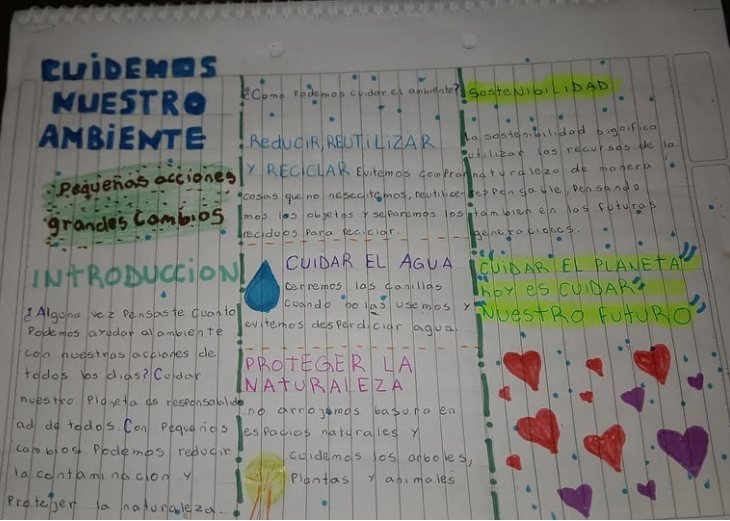
Ejes principales y propuestas
Sostenibilidad
La sostenibilidad significa utilizar los recursos de la naturaleza de manera responsable, pensando también en las futuras generaciones.
Reducir, reutilizar y reciclar
Evitemos comprar cosas que no necesitemos, reutilicemos para darles otra vida y separemos los residuos para reciclar.
Cuidar el agua
Cerremos las canillas cuando no las usemos y evitemos desperdiciar agua.
Proteger la naturaleza
No arrojemos basura en espacios naturales y cuidemos los árboles, plantas y animales.
¡Cuidar el planeta hoy es cuidar nuestro futuro!
El monóxido de carbono: el asesino invisible
No se ve, no se huele y puede ser mortal. Conocé qué es, cómo aparece en casa y cómo prevenirlo.
Por Pame Loncoman · Sede: Mencué · Noviembre 2026 · Ciencia y tecnología
¿Te imaginas un peligro en tu casa que no lo puedas ver, ni oler, ni saborear pero puede ser muy peligroso para tu salud? ¡Ese peligro existe y se llama monóxido de carbono! En este artículo vamos a explorar sus causas así lo podemos prevenir para cuidarnos a nosotros mismos, a nuestras familias y vecinos.
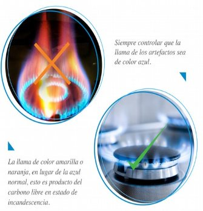
Antes de hablar de cómo prevenirlo, primero vamos a entender qué es este gas, de dónde sale y por qué es tan peligroso. ¡Vamos a conocerlo!
¿Qué es el monóxido de carbono?
Es un gas incoloro (no tiene color), inodoro (no tiene olor) e insípido (no tiene sabor), por eso se dice que es el asesino invisible. Esto se forma cuando se queman cosas como por ejemplo: gas, leña, nafta o carbón sin que tengan suficiente oxígeno. Cuando lo respiramos entra a la sangre y evita que el oxígeno se transporte a nuestro cuerpo, y esto puede dañar a nuestros órganos más importantes como el corazón y el cerebro.
¿Qué prácticas del hogar pueden ser peligrosas?
Dormir con brasas o llamas encendidas.
Usar el horno o las hornallas para calefaccionarse.
Colocar calefones en espacios cerrados.
Encender motores de combustibles en garajes o en espacios sin ventilación.
¿Cómo nos damos cuenta de que está presente?
Síntomas
Dolor de cabeza
Mareos
Náuseas
Cansancio
Dolor de pecho
Dificultad para respirar
Vómitos
Señales que avisan que hay un problema
Las llamas de las cocinas de gas son amarillas o anaranjadas (deben estar celestes o azules).
Apareción de hollín o tiznado alrededor del artefacto.
¿Cómo protegernos?
Revisar los aparatos de gas una vez al año por un profesional.
Mantener la ventilación.
No calefaccionarse con el horno ni las hornallas.
No dejar el vehículo encendido en el garaje.
El monóxido de carbono es un peligro real, ¡pero se puede prevenir!
El enemigo invisible de invierno
En el campo se usa mucho fuego para calentarse, y con él llega un gas que no se ve ni se huele: el monóxido de carbono.
Por Agustina Pedrero · Sede: Lago Pellegrini · Noviembre 2026 · Ciencia y tecnología
¿Te dolió la cabeza alguna vez con la estufa prendida?
En invierno, en el campo usamos mucho fuego para calentarnos, pero hay un gas peligroso que no se ve y no tiene olor: el monóxido de carbono.
Cómo evitar intoxicarte sin darte cuenta
Dejar siempre una ventana un poco abierta.
Hacer que un gasista revise tu estufa.
No usar el horno para calentar.
Si la llama no es azul, apagar todo.
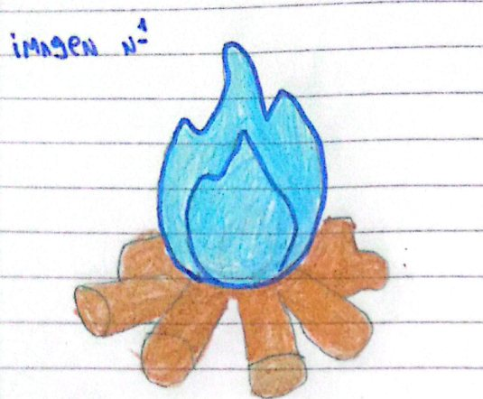
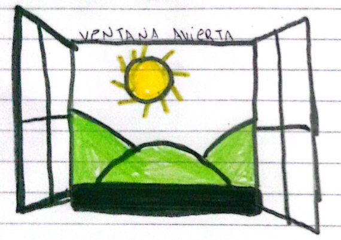
La ciencia detrás del Mundial · Sierra Pailemán
Colágeno, polímeros, caucho y sudor: qué hay detrás del equipamiento de los jugadores.
Por Nicolás Antenao · Sede: Sierra Pailemán · Noviembre 2026 · Ciencia y tecnología
Materiales de los botines
Están fabricados mediante procesos químicos. Pueden ser de cuero natural (con la proteína colágeno) o sintéticos (poliuretano y polímeros). La suela suele ser de caucho o plásticos para dar resistencia y flexibilidad, y los tapones de plástico o sintéticos mejoran el agarre en el césped.
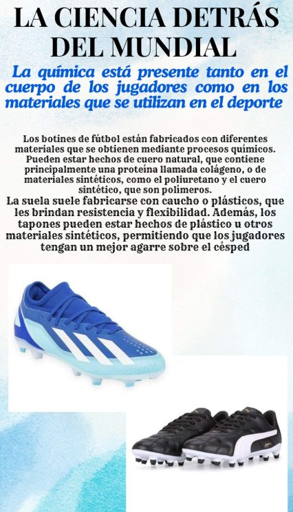
Termorregulación y sudoración
Durante un partido los músculos producen calor. Para mantener la temperatura corporal, el cuerpo suda (agua y sales minerales). Al evaporarse en la piel, el sudor absorbe calor y enfría el cuerpo.
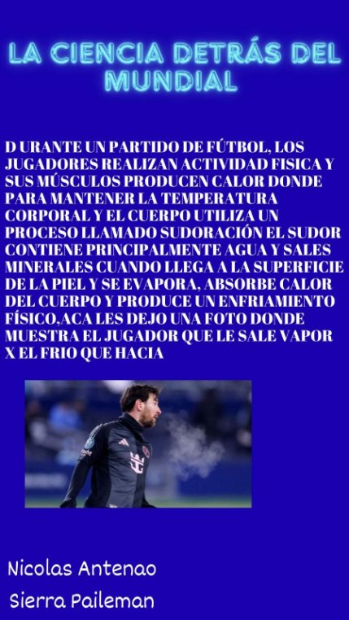
Cuidar el ambiente en Sierra Pailemán
Siete acciones, cuatro propuestas comunitarias y una reflexión para mantener limpio el entorno del paraje.
Por Agustín Huinca · Sede: Sierra Pailemán · Noviembre 2026 · Ciencia y tecnología
Acciones importantes
No tirar basura.
Separar y reciclar los residuos.
Reducir el uso de plástico.
Cuidar el agua.
Proteger la flora y la fauna nativa.
Evitar los incendios.
Mantener limpios los espacios naturales.
Propuestas comunitarias
Campañas de limpieza.
Reciclaje.
Plantación de especies nativas.
Promoción de un turismo responsable.
Reflexión
Cuidar el entorno hoy asegura un lugar mejor para las generaciones futuras.
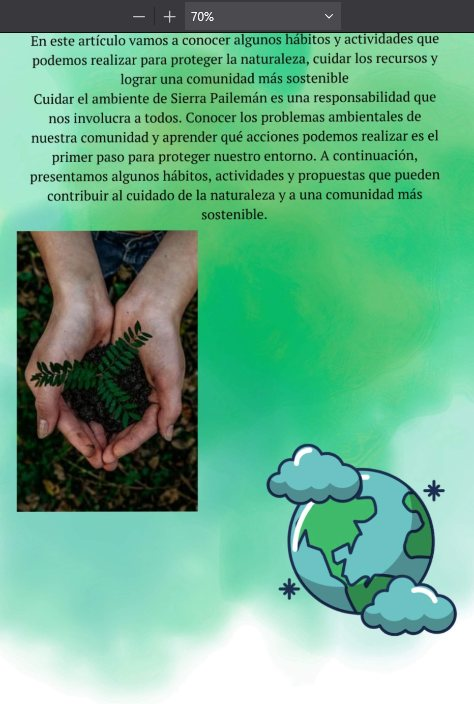
Incendios forestales: una realidad que no podemos ignorar
Un incendio no solo quema árboles: destruye plantas, afecta a los animales y pone en riesgo a las personas. Conoce sus causas y cómo prevenirlo.
Por Alexis Rosas · Sede: Río Chico · Noviembre 2026 · Ciencia y tecnología
¿Alguna vez pensaste qué sucede cuando un incendio afecta un bosque o un campo?
Los incendios forestales pueden provocar grandes daños en el ambiente, afectar a los animales y las plantas, y poner en riesgo a las personas. Por eso, es importante conocer sus causas, sus consecuencias y cómo podemos prevenirlos.
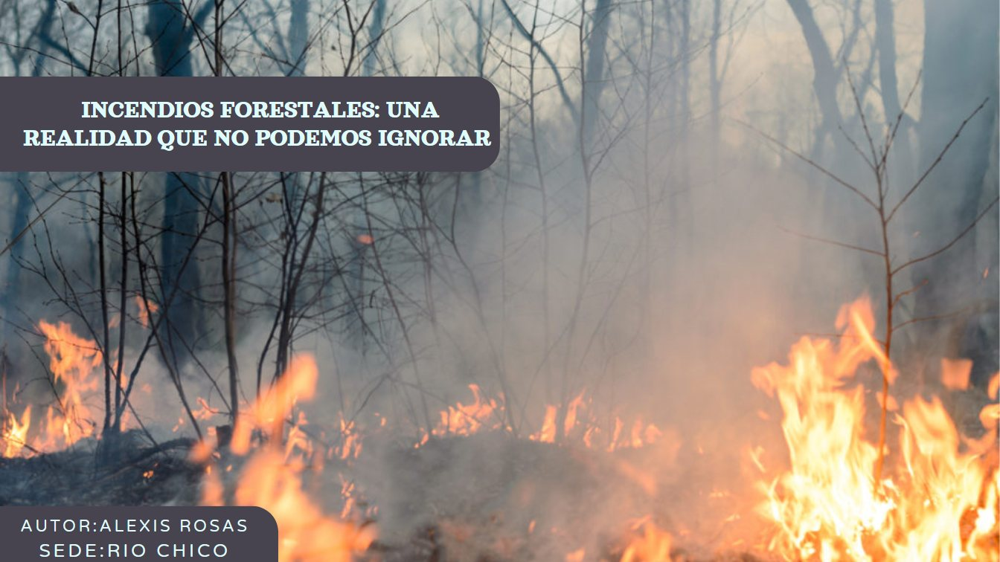
¿Cómo se producen?
Los incendios pueden comenzar por causas naturales o por acciones humanas, como encender fuego en lugares no permitidos o arrojar colillas.
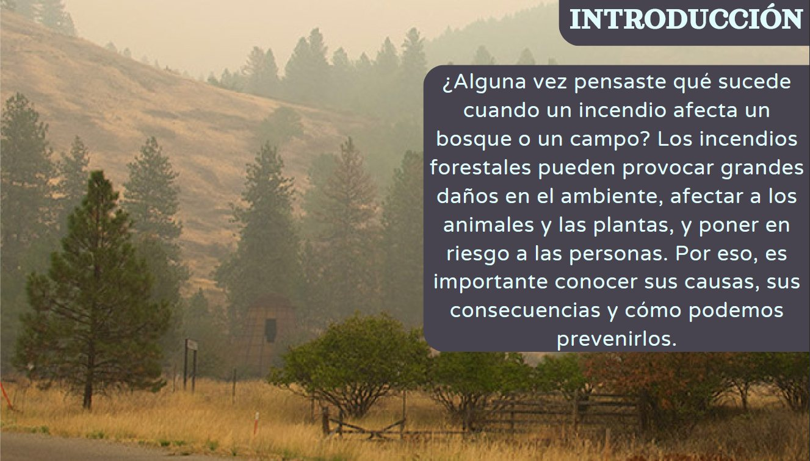
¿Qué consecuencias tienen?
Pueden destruir plantas, afectar a los animales y perjudicar a las personas y al ambiente.
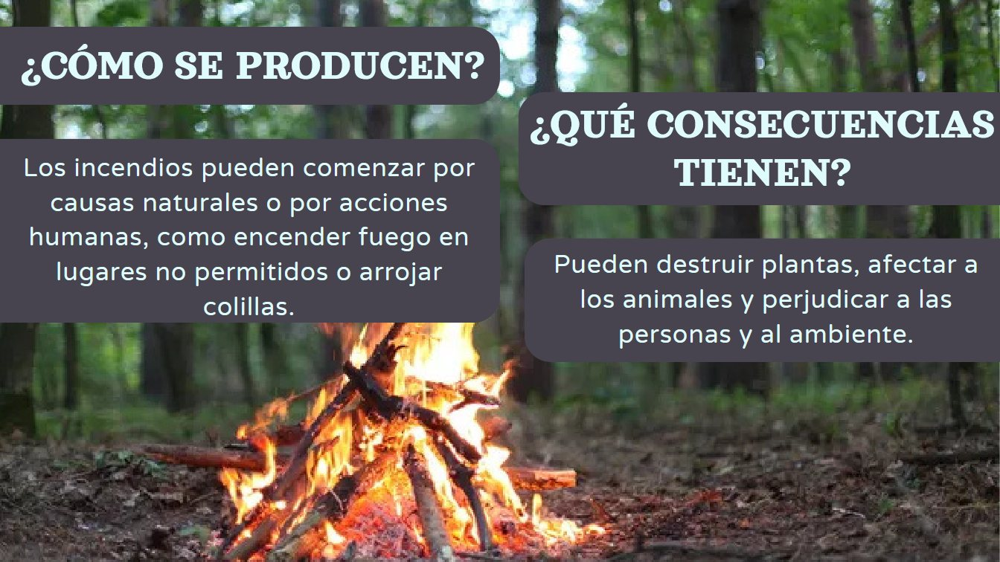
¿Cómo podemos prevenirlos?
No encender fuego en lugares prohibidos.
Apagar completamente las fogatas.
No arrojar colillas ni materiales encendidos.
Respetar las recomendaciones de nuestra comunidad.
Prevenir los incendios forestales es responsabilidad de todos. Cuidar la naturaleza también es cuidar nuestra comunidad.
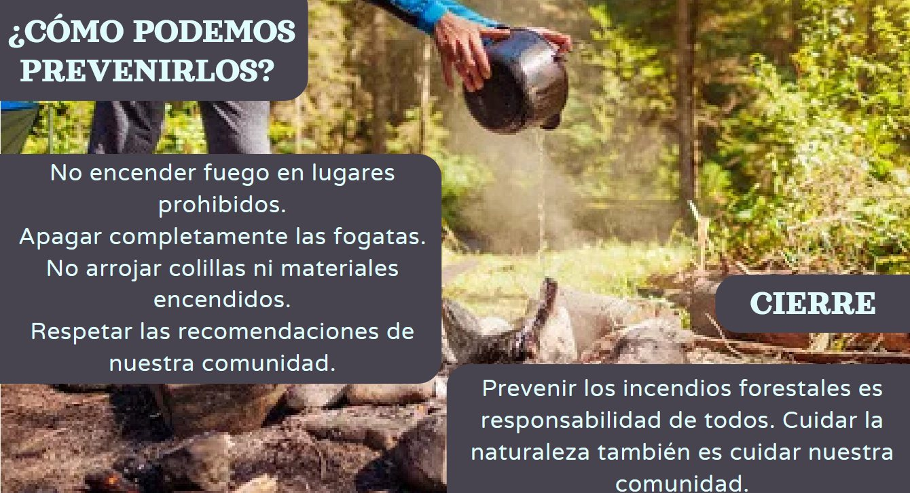
La contaminación: un problema que nos afecta a todos
La contaminación afecta el agua, el aire y el suelo. Conocé sus causas y las pequeñas acciones diarias que ayudan a cuidar el ambiente.
Por Guadalupe Centeno · Sede: Lago Pellegrini · Noviembre 2026 · Ciencia y tecnología
¿Alguna vez pensaste cómo afecta la contaminación al lugar donde vivimos?
La contaminación es un problema que está presente en nuestro ambiente y puede afectar el agua, el aire y el suelo. Por eso, es importante conocer sus causas y pensar qué podemos hacer para reducirla.
Responsabilidad compartida
Cuidar el ambiente es una responsabilidad de todos. Con pequeños cambios en nuestras acciones cotidianas podemos contribuir a mantener un entorno más limpio y saludable.
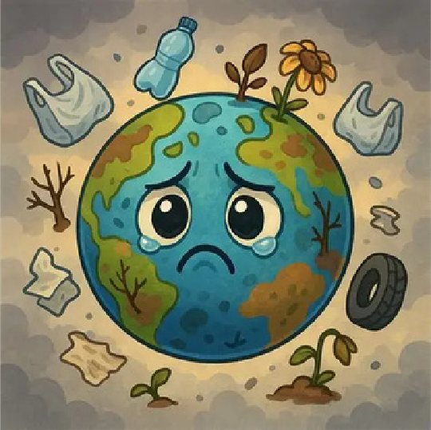
Causas principales
Una de las principales causas de la contaminación es la acumulación de residuos. Cuando la basura se arroja en lugares incorrectos, puede contaminar el suelo y el agua.
También la contaminación del aire puede producirse por el humo de los vehículos, las industrias y la quema de residuos.
¿Qué podemos hacer para cuidarlo?
Para cuidar nuestro ambiente podemos separar los residuos, evitar tirar basura en la calle, reutilizar materiales y reducir el uso innecesario de productos descartables.
También es importante cuidar el agua y los espacios naturales de nuestra comunidad.
La educación y la participación de todas las personas son fundamentales para generar hábitos más responsables. Si cada uno aporta desde su lugar, podemos lograr cambios positivos en nuestro entorno.
Cierre y reflexión
La contaminación es un problema que nos involucra a todos. Cuidar el ambiente no significa hacer grandes cosas, sino comenzar con pequeñas acciones todos los días.
¡Cuidar el planeta es cuidar nuestro futuro!
La Copa del Mundo: mucho más que un trofeo
El trofeo más famoso del fútbol no es oro macizo: mide 36,5 centímetros, pesa 6,175 kilos y esconde mucha química. Descubrí por qué se eligió el oro.
Por Antonela Ancatruz · Thaiel Cayul · Mauro Cayu · Sede: Laguna Blanca · Noviembre 2026 · Ciencia y tecnología
¿Por qué la Copa del Mundo es de oro?
A continuación compartimos información importante para entender por qué es de oro y no de otro material.
No es oro macizo
El trofeo mide 36,5 centímetros y pesa exactamente 6,175 kilogramos. Es fundamental aclarar que no es de oro macizo en su totalidad: en ese caso pesaría unos 75 kilos y sería imposible de levantar.
En realidad, es una estructura hueca fundida con 5 kilogramos de oro sólido de 18 quilates (75% de oro puro, aleado con cobre y plata para evitar deformaciones).
La malaquita de la base
Sus dos franjas verdes de la base son de malaquita, un mineral de cobre que representa los continentes.
Composición química del trofeo
Oro (Au): constituye el 75% de la aleación principal de la estructura del trofeo (18 quilates), lo que le otorga su brillo y evita que sea demasiado blando.
Aleación metálica de soporte: el 25% restante se compone de otros metales comunes de transición para aportar resistencia mecánica.
Malaquita Cu₂CO₃(OH)₂: mineral semiprecioso de cobre, presente en la base con anillos de característico tono verde.
En Treneta encontramos plantas, tierra, animales y agua: conocemos de dónde sale el agua que tomamos y cómo la tierra fértil sostiene nuestros cultivos.
Por Dylan y Segundo · Sede: Paraje Treneta · Noviembre 2026 · Ciencia y tecnología
¿De dónde sale el agua que tomamos en nuestro paraje?
La naturaleza es muy importante en nuestras vidas. En nuestro paraje Treneta encontramos plantas, tierra, animales y agua; esto nos brinda los recursos necesarios para poder vivir. Por eso es necesario reconocer la importancia de la naturaleza y cuidarla entre todos.
Este paraje está muy unido a la naturaleza: cuenta con un arroyo que brinda el agua que se potabiliza en el tanque de nuestro paraje para su consumo. El agua se origina en las nacientes de la meseta que rodea el paraje y le da reparo al lugar.
Las plantas, los animales y la tierra son parte fundamental de la vida diaria de todos nosotros.
El agua: el corazón del paraje
El arroyo es el corazón del paraje. Si lo mantenemos limpio, sin basura ni químicos, el agua seguirá sirviendo para tomar, regar y para que vivan los peces y las plantas.
La tierra fértil
Algunos vecinos aprovechan la tierra para cultivar sus propias verduras, demostrando la importancia de cuidar y aprovechar los recursos naturales. Además, la tierra ayuda mucho para los cultivos porque es muy fértil: se pueden cosechar lechuga, tomate y acelga, y gracias al arroyo se pueden regar muy bien.
Nuestro paraje tiene una tierra muy fértil y el arroyo es muy bueno para regar los cultivos; se pueden cultivar diferentes tipos de plantas y verduras, por ejemplo papa, zapallo y lechuga.
Pausa de hidratación
Todos necesitamos nuestro cooling break: lo que el Mundial nos está enseñando sobre el cuerpo.
Por Lautaro José Cayunao · Sede: Aguada de Guerra · Noviembre 2026 · Ciencia y tecnología
¿Por qué los jugadores tienen una pausa de tres minutos a mitad del partido?
Este artículo trata sobre la pausa de hidratación que se comenzó a implementar en el Mundial 2026. Todos necesitamos nuestro cooling break: esto es lo que el Mundial nos está enseñando sobre el cuerpo.
La pausa de hidratación se propone para el cuidado de la salud de los jugadores ante el clima extremo.
Tiene una duración de 3 minutos y es reglamentaria. Se convirtió en una regla esencial del fútbol moderno, introducida oficialmente por la FIFA durante el Mundial de Brasil 2014.
¿Qué consumen los jugadores durante la pausa?
Agua: para reponer el líquido que se pierde al sudar.
Bebidas isotónicas con electrolitos: aportan sodio para retener mejor los líquidos y evitar calambres.
Carbohidratos: devuelven la energía a los músculos durante esos tres minutos de pausa.
¿Cómo entrena la Selección con el calor del Mundial 2026?
En el Mundial 2026 hubo temperaturas de hasta 46 °C. Adidas creó una tecnología para que los jugadores puedan entrenar sin complicaciones.
Por Milton Chico · Sede: Aguada de Guerra · Noviembre 2026 · Ciencia y tecnología
¿Te has puesto a pensar cómo hizo la Selección Argentina para poder entrenar en el Mundial 2026 con el calor que hacía? Se reportaron temperaturas muy altas, de hasta 46 °C.
El chaleco refrigerante
La Selección Argentina habría tenido muchas complicaciones para lograr entrenar y prepararse para los partidos, pero Adidas ingenió una tecnología con un chaleco de tejido microscópico que permite la entrada de aire fresco y la salida de calor. Es muy refrescante por dentro y eso ayudaba a los jugadores a soportar el calor extremo.
Zapatillas ultralivianas
Además, usaban zapatillas de modelos ligeros y ultra respirables. La Ciencia nos demuestra que nada es imposible: solo usando la mente podemos hacer cosas grandes.
Un enemigo silencioso
El monóxido de carbono puede causar tragedias en el hogar: consejos para prevenirlas.
Por Juan Cruz Ávila · Gabriel Parra · Sede: Cerro Policía · Noviembre 2026 · Ciencia y tecnología
¿Sabías que una pérdida de gas puede provocar una tragedia en casa sin que lo notemos?
Consejos de prevención
Para prevenir estas tragedias hay que tener en cuenta los siguientes consejos:
Estar alerta siempre al momento de una instalación de gas o garrafón.
Fijarse si no hay ninguna pérdida de gas o falla; esto se puede detectar a través del olfato.
Tener cuidado al momento de usar cualquier cosa que produzca gas.
Tragedias
Ya hablamos de algunos consejos de prevención; ahora hablaremos de las tragedias donde personas fallecen por inhalación de monóxido de carbono.
Inhalar el monóxido de carbono puede afectar a tu salud.
La pérdida de gas (monóxido de carbono) puede alterar el fuego, provocando desastres.
Por el gas a veces se pueden producir explosiones en el hogar, por la garrafa, el calefactor, etc.
En fin, siempre hay que tener cuidado al momento de usar algo que produzca monóxido de carbono.
Un problema que nos afecta a todos
El basurero de Cerro Policía contamina el ambiente y la salud de nuestra comunidad: conocemos el problema y proponemos soluciones.
Por Isaías Raninqueo · Isaías Quiroga · Sofía Achares · Sede: Cerro Policía · Noviembre 2026 · Ciencia y tecnología
¿Alguna vez pensaste en cómo la basura puede afectar a nuestra salud y al medio ambiente?
Un problema que nos preocupa
En Cerro Policía tenemos un basurero donde se acumula mucha basura. Esto hace que se contamine el ambiente y que aparezcan problemas de salud, como problemas para respirar o irritación en la piel y en los ojos. El basurero no recibe el tratamiento que necesita, así que la basura se junta y hay mal olor, contaminación, insectos y animales.
El basurero de Cerro Policía es algo que nos preocupa porque afecta al lugar donde vivimos. La acumulación de basura contamina el suelo, hace que el lugar se vea sucio y trae muchas moscas y otros animales que pueden transmitir enfermedades.
Cuando se quema la basura
Otro de los problemas es cuando se quema la basura: el humo contamina el aire y puede provocar problemas para respirar.
¿Qué podemos hacer?
Nosotros creemos que el basurero debería recibir el tratamiento que necesita para evitar que la basura siga trayendo problemas. También es importante no generar tantos residuos y no tirar la basura en cualquier lado. El basurero de Cerro Policía no es solamente un problema de la basura, sino un problema que afecta al ambiente y a toda nuestra comunidad: por eso es importante que busquemos una solución y que cuidemos entre todos el lugar donde vivimos.
La ciencia detrás del Mundial · Cerro Policía
¿Qué pasa en el cuerpo de un jugador cuando corre los noventa minutos? ¿Y por qué la Copa es de oro? Detrás de cada partido del Mundial hay una reacción química.
Por Xiomara Soto · Sede: Cerro Policía · Noviembre 2026 · Ciencia y tecnología
Cada cuatro años el mundo se para por el Mundial de fútbol. Millones de personas gritan, festejan y sufren por un partido. Pero detrás de toda esa pasión que vemos en la tele hay algo que no se ve a simple vista: la química. Desde la copa que levantan los campeones, todo tiene una explicación.
Aunque parezca que el fútbol es solo un deporte, si lo miramos con ojos de científicas y científicos nos damos cuenta de que en cada jugada, en cada corrida y en cada objeto del juego está pasando una reacción química.
La energía de los jugadores: ¿de dónde sale la fuerza para correr los 90 minutos del partido?
Cuando un jugador corre, su cuerpo necesita energía. Esa energía viene de lo que comió en el día, sobre todo de la glucosa, que es un tipo de azúcar.
Dentro de nuestras células pasa una reacción química llamada respiración celular. La fórmula es simple: GLUCOSA + OXÍGENO → ENERGÍA (ATP) + DIÓXIDO DE CARBONO + AGUA.
Cuando el esfuerzo es muy grande y no llega suficiente oxígeno, el cuerpo realiza otra reacción y se produce ácido láctico. Por eso sentimos calambres y cansancio muscular.
La Copa del Mundo: ¿por qué es de oro?
La Copa del Mundo no es de oro macizo porque sería demasiado pesada, pero está cubierta de oro de 18 quilates. ¿Por qué oro y no otro metal? Porque el oro es un metal muy especial: no se oxida, no se mancha ni se pone feo con el tiempo, como el hierro; es muy brillante y no pierde su color, por eso representa algo valioso y eterno; y se puede moldear para hacer la forma de la Copa sin romperse.
Si fuera de hierro o de plata, con los años se oxidaría y perdería el brillo. El oro simboliza que el título de campeón del mundo no se mancha nunca.
La química está en todos lados, y también en el fútbol. Sin la energía de la glucosa los jugadores no podrían correr, y sin las propiedades del oro la Copa no brillaría para siempre. El Mundial muestra que la ciencia también entra en la cancha.
La ciencia detrás del Mundial · El Cáin
¿Alguna vez te preguntaste qué pasa en nuestro cuerpo cuando jugamos al fútbol? Cuando corremos, saltamos y pateamos, la ciencia también está presente.
Por Mariana Catriel · Sede: El Cáin · Noviembre 2026 · Ciencia y tecnología
Cuando jugamos, corremos, saltamos, pateamos y hacemos mucho esfuerzo. Para poder hacer todo esto, nuestro cuerpo necesita energía. Aunque parezca que en el fútbol solamente hay que correr y jugar, la ciencia también está presente: en nuestro cuerpo ocurren diferentes procesos que nos ayudan a poder seguir jugando.
Cuando corremos o hacemos ejercicio, nuestros músculos necesitan energía para funcionar. Esta energía se obtiene principalmente de los alimentos que comemos. Uno de ellos es la glucosa, que nuestro cuerpo utiliza para obtener energía.
También respiramos más rápido y nuestro corazón late más rápido cuando hacemos ejercicio. Esto pasa porque nuestros músculos necesitan más oxígeno para poder trabajar.
Además, cuando jugamos durante bastante tiempo, transpiramos y perdemos agua. Por eso es importante tomar agua para mantenernos hidratados.
La ciencia también está presente en los elementos que usamos para jugar. Por ejemplo, la pelota está hecha con materiales que hacen que pueda rebotar, ser resistente y mantener su forma.
Como podemos ver, la ciencia está presente en el fútbol y en nuestro cuerpo. Gracias a ella podemos entender mejor qué pasa cuando jugamos y hacemos ejercicio.
Cuidemos el medio ambiente en Blancura Centro: todos juntos podemos
Cuidar el medio ambiente es una responsabilidad de todos. En Blancura Centro, con pequeñas acciones diarias mantenemos el paraje limpio y saludable.
Por Juan Cruz Epullán · Joaquín Gallardo · Sede: Blancura Centro · Noviembre 2026 · Ciencia y tecnología
Cuidar el medio ambiente es una responsabilidad de todos. En Blancura Centro, mantener los espacios limpios y libres de basura es fundamental para disfrutar de un lugar agradable, saludable y seguro. Por eso, es importante comenzar a tomar hábitos sencillos, como reciclar plástico, latas, cartones y otros materiales que pueden tener una segunda utilidad.
El reciclaje es una de las acciones más importantes para reducir la cantidad de residuos que generamos diariamente. Separar los plásticos, las latas, el papel y el cartón permite que estos materiales puedan ser utilizados o transformados en nuevos productos, evitando que terminen acumulados en las calles o en lugares inadecuados.
Además, evitar la concentración de basura ayuda a prevenir malos olores, la aparición de insectos y otros problemas que pueden afectar la salud y el bienestar de las personas. Mantener Blancura Centro limpio también contribuye a crear un ambiente más agradable para quienes viven, trabajan o transitan por la zona.
Cada persona puede colaborar
Cada persona puede colaborar con pequeñas acciones:
Utilizar los cestos de basura.
Separar los residuos reciclables.
No arrojar desperdicios en la vía pública.
Enseñar a familiares y vecinos la importancia de mantener limpio el entorno.
Cuando todos colaboramos, los resultados pueden ser mucho mayores.
Reflexión final
Cuidar el medio ambiente en Blancura Centro es una tarea que nos corresponde a todos. Reciclar plásticos, latas y otros materiales, además de evitar la acumulación de basura, son acciones sencillas que pueden generar un gran cambio. Si cada persona aporta su granito de arena, podremos construir un Blancura Centro más limpio, saludable y agradable para el presente y para las futuras generaciones.
Un espacio limpio es responsabilidad de todos y también es un beneficio para todos.
La fuerza que hace rodar la pelota
¿Pensaste alguna vez en la fuerza que tienen los jugadores para poder hacer rodar la pelota? Detrás de cada corrida y cada pase hay mucha ciencia.
Por Gaspar Reinao · Sede: Naupa Huen · Noviembre 2026 · Ciencia y tecnología
¿Pensaste alguna vez en la fuerza que tienen los jugadores para poder hacer rodar la pelota?
Los jugadores corren realizando mucho esfuerzo y, por eso, transpiran mientras patean la pelota.
Para que un jugador pueda moverse en la cancha, su cuerpo convierte lo que come en movimiento a través de un proceso llamado respiración celular: mediante reacciones químicas, las células rompen los enlaces de las moléculas y producen energía (ATP), que el cuerpo utiliza para moverse.
La pelota se mueve porque el pie del jugador ejerce una fuerza sobre ella; esa fuerza la empuja. Los jugadores se cansan porque sus músculos necesitan consumir energía para producir esas fuerzas y movimientos.
Sabemos que el movimiento del cuerpo produce energía, y esa energía se ve en la rotación de la pelota.
El patio de todos: Mencué
¿Cómo nos organizamos con la limpieza de nuestro pueblo? Le invitamos a conocer cómo nos organizamos con la limpieza de nuestro pueblo.
Por Luciana y Milagros Calfupan · Sede: Mencué · Noviembre 2026 · Ciencia y tecnología
Durante estos últimos años, la limpieza de nuestro pueblo ha mejorado muchísimo. No solo porque la cantidad de basura en las calles se redujo, sino porque entre los pobladores, la Escuela y la Comisión de Fomento nos propusimos tener un patio más limpio.
Para que esto suceda, contamos con la ayuda de los trabajadores de la Comisión de Fomento, quienes pasan a retirar la basura de nuestros domicilios. En casa, vamos juntando los residuos en el tacho, con bolsas de consorcio, para luego llevarlos al basurero local. Además, algunos vecinos se ocupan de llevar su propia basura directamente al basurero.
En este año, la Comisión de Fomento se propuso limpiar y mantener la plaza principal, así como los terrenos públicos e institucionales. También salieron a recorrer los cerros para juntar nylos y bolsas que estaban desparramados.
Por su parte, la Escuela Primaria realizó una jornada sobre cómo cuidar nuestro medio ambiente y dejó a disposición cuatro cestos de basura en la plaza principal, donde se separan por sector: botellas, latas, tapitas.
Y si vinieras a nuestro pueblo, sabiendo cómo se maneja la limpieza... ¿Te sumarías a nuestras ideas, por el bien de tu localidad?
03 / 07
Territorio
Parajes, comunidades y ambiente de la Patagonia rionegrina.
Tradición, encuentro y raíces de nuestra comunidad
Cada mes de febrero, el paraje Treneta se prepara para vivir una de las celebraciones más esperadas: la Fiesta del Paraje Treneta.
Por ESRN Rural — Anexo Treneta · Sede: Paraje Treneta · Febrero (edición especial) · Territorio
Cada mes de febrero, el paraje Treneta se prepara para vivir una de las celebraciones más esperadas por su comunidad: una fiesta que reúne a familias, vecinos, instituciones y visitantes para compartir, celebrar y mantener vivas las costumbres que forman parte de nuestra identidad rural.
La jornada comienza con el acto protocolar, un momento de reconocimiento y encuentro en el que se pone en valor la historia del paraje y el trabajo de quienes, día a día, construyen y sostienen la vida de la comunidad.
El acto protocolar abre la jornada de la fiesta.
Desfiles, tradición y encuentro
Uno de los momentos más esperados es el desfile cívico de las instituciones, donde escuelas, organizaciones y diferentes actores de la comunidad participan mostrando con orgullo su pertenencia. Luego, el desfile criollo llena las calles de una colorida muestra de tradiciones, caballos y agrupaciones que representan nuestra cultura rural.
El desfile criollo llena las calles de color y tradición.
La celebración continúa con el almuerzo popular, una gran mesa comunitaria donde se comparte el tradicional asado para todos. Es el momento del encuentro, de la charla y de la alegría compartida.
El almuerzo popular, una gran mesa comunitaria con asado para todos.
Cuando cae la tarde, llega la jineteada, con las destrezas criollas que ponen en escena la habilidad de jinetes y caballos: la monta con encimera y bastos, la gurupa sureña y otras categorías que reúnen a participantes de toda la región.
La jineteada, con destrezas criollas de jinetes y caballos.
La fiesta del Paraje Treneta es mucho más que una celebración: es un momento en el que la comunidad se encuentra, se reconoce y renueva sus lazos. Las tradiciones se transmiten de generación en generación.
Cierre con baile al aire libre, chamamé y cumbia en el paraje.
Próxima parada: atractivos mundialistas
Un recorrido por los puntos más interesantes que esperan ser visitados en la gran cita deportiva.
Por Estudiantes 4.º año · Sede: ESRN Rural · Noviembre 2026 · Territorio
Fue entonces momento de planificar el trayecto que la Selección Argentina recorrería por el país. Así surgió la idea de pensar el mundial como un viaje: cada estadio, cada ciudad, cada atractivo es una parada de un recorrido que une el deporte con la geografía y el turismo de nuestro territorio.
En el taller nos propusimos armar un itinerario propio, eligiendo los puntos que consideramos imperdibles. El resultado es una guía pensada desde la mirada de los estudiantes: qué ver, dónde quedarse y qué hace especial a cada lugar.
Una agenda para descubrir
Cada parada incluye un dato curioso, una recomendación y una foto. Así, la revista se transforma en una herramienta para conocer el país a través del mundial, uniendo propuestas turísticas, cultura y deporte.
La problemática del medio ambiente en mi pueblo
Inundaciones, explotación de la caliza y el cuidado del ambiente en Sierra Pailemán.
Por Kevin Nahuel · Sede: Sierra Pailemán · Noviembre 2026 · Territorio
¿Qué problemas ambientales sufre hoy el lugar donde vivimos?
El planeta Tierra está sufriendo grandes problemas ambientales como consecuencia de la sobreexplotación de sus recursos naturales, tanto renovables como no renovables, para satisfacer el consumo del ser humano. Ese consumo está basado en la adquisición de cualquier producto material, la obtención de productos alimenticios o sanitarios y en cualquier acción que consuma agua o energía, entre otras.
Problemas de inundación en Sierra Pailemán
En los últimos años, las lluvias fuertes han causado inundaciones y han complicado la vida de los habitantes. También pueden dejar los caminos y rutas en mal estado, haciendo difícil entrar o salir de la zona.
Para mejorar esta situación, sería importante arreglar y mantener los caminos, hacer lugares para que el agua pueda salir y tener máquinas preparadas para cuando haya tormentas fuertes. Así se podría evitar que la comunidad quede aislada y reducir los problemas que causan las inundaciones.
La explotación de la caliza y la minería
El problema ambiental se relaciona también con la explotación de la caliza, porque podría generar un impacto en el ambiente de la zona. La minería sirve para sacar minerales, pero también puede dañar la naturaleza, arruinar el suelo y contaminar el agua, afectando a los animales, las plantas y las personas.
Por eso hay que controlar la minería y cuidar el ambiente para evitar estos problemas.
Tenemos que cuidar más el lugar donde vivimos porque la minería y las inundaciones pueden traer problemas para la naturaleza y para las personas. Es importante buscar soluciones y prevenir esos problemas para vivir en un lugar mejor.
Yaminué: conexión con la naturaleza
Un recorrido por los espacios más destacados de Yaminué: el barrio, las viviendas, el puente y el arroyo.
Sede: Yaminué · Noviembre 2026 · Territorio
Yaminué es un lugar donde la naturaleza y la vida cotidiana se encuentran. En este articulo, podemos ver algunos de los espacios que hacen especial a este paraje.
Conexion con la naturaleza
Aca podemos ver como Yaminué tiene conexion con la naturaleza.
Barrio local
Aca se localiza uno de los barrios de Yaminué.
Viviendas de los habitantes
En esta foto se puede apreciar como algunas casas de sus habitantes se ven, tambien se alcanza a ver como estos humildes vecinos acceden a sus casas.
El puente
Este es el puente de Yaminué, uno de los lugares mas destacados.
El arroyo
Este es el arroyo, pero aca le decimos catarata; es uno de los lugares donde en el verano mas se disfruta.
Nuestro paraje, nuestra responsabilidad
La contaminación en Arroyo Los Berros y propuestas para mejorar.
Por Yuliana Liempi · Viviana Ñancucheo · Sede: Arroyo Los Berros · Noviembre 2026 · Territorio
Nuestro Paraje, Nuestra Responsabilidad
Un entorno limpio hoy, un futuro mejor mañana. Arroyo Los Berros es mucho más que un paraje: es nuestro hogar, nuestro lugar en el mundo. Sin embargo, la contaminación, la basura y la falta de organización están dañando su belleza natural y el bienestar de todos. Es momento de reflexionar y actuar juntos.
Cada acción que realizamos deja una huella en el ambiente. Cada basura que tiramos, cada descuido, cada "no es problema mío" se convierte en un problema de todos. Pero también, cada pequeño cambio puede transformar la realidad.
La contaminación en nuestro paraje: En Arroyo Los Berros, la basura se acumula en las orillas, en los caminos y en los espacios naturales. Plásticos, vidrios, latas y residuos orgánicos contaminan el suelo, el agua y el aire. Esto no solo arruina la belleza del lugar, sino que también afecta la salud de las personas, los animales y las plantas.
¿Qué problemas nos trae?:
Agua contaminada que puede provocar enfermedades.
Malos olores e insectos que afectan nuestra calidad de vida.
Pérdida de flora y fauna nativa.
Suelos dañados que tardan años en recuperarse.
¿Por qué es importante la limpieza y la organización?: Mantener limpio nuestro paraje no es solo una cuestión estética, es una cuestión de respeto y amor por la vida. La organización comunitaria es clave para lograr cambios reales y duraderos.
Propuestas Y Acciones:
No tires basura: llevemos siempre una bolsa y depositemos los residuos en los lugares adecuados.
Participemos en jornadas de limpieza comunitaria.
Respetemos la naturaleza: cuidemos las plantas, los animales y el agua.
Eduquemos y concienticemos: hablemos en casa, en la escuela y con amigos sobre la importancia de cuidar nuestro entorno.
Final / Reflexión:
Arroyo Los Berros puede volver a ser ese lugar limpio, sano y hermoso que todos soñamos, pero depende de nosotros. Cuidar nuestro paraje es cuidar nuestro presente y nuestro futuro. Pequeñas acciones, grandes cambios. ¡CUIDEMOS LO QUE ES NUESTRO!
Sembrando conciencia, cosechando un paraje limpio
La separación de residuos es otro de los proyectos para reducir la contaminación, dar una segunda utilidad a los materiales y mantener la limpieza en el paraje.
Por Aluhe Cardozo · Sede: Arroyo Los Berros · Noviembre 2026 · Territorio
Si miramos a nuestro alrededor, la belleza de nuestro paraje es innegable. Sin embargo, mantener esa belleza requiere un trabajo constante. Hasta hace un tiempo era ver botellas tiradas por todos lados; hoy la realidad es otra: se han colocado contenedores exclusivamente para el almacenamiento de las botellas de plástico, que luego son llevadas a la ciudad para su reciclado.
En este artículo hablamos de la transformación que estamos viviendo gracias a los proyectos de reciclaje y la jornada de limpieza comunitaria. A continuación les comparto las diferentes acciones que se llevan a cabo en nuestro pueblo para mantenerlo limpio.
Plaza y espacios públicos del paraje.
Acciones comunitarias
Habitantes de nuestro pueblo se reúnen para realizar una limpieza comunitaria en diferentes puntos del paraje; recorrieron los principales espacios públicos para recolectar, limpiar y embellecer nuestro entorno.
Contenedor metálico rojo para la recolección de botellas plásticas.
Con estas diferentes iniciativas no sólo se busca mejorar la imagen de nuestro pueblo, sino también concientizar sobre la importancia de no tirar la basura en la vía pública, reciclar y cuidar el medio ambiente. Queda demostrado que el bienestar de nuestro pueblo depende de toda la comunidad en general.
Imagen panorámica del paraje y sus instalaciones.Vista del entorno y las instalaciones locales.
Cuando vemos más allá de lo superficial, la belleza de la meseta aparece
La meseta parece vacía, pero si se mira más allá de lo superficial hay vida en cada rincón: animales, plantas y uno de los cielos más limpios del lugar.
Por Debora Lleiful · Sede: El Caín, Anexo N° 22 · Noviembre 2026 · Territorio
La gente mira la meseta y piensa que no hay nada, que solo es viento y tierra, pero si miramos más allá de eso, hay vida en cada rincón de la meseta. Por eso es que debemos cuidarla y conservarla.
Porque en ella hay animales y plantas que solo crecen ahí, personas, y uno de los cielos estrellados más lindos porque no están contaminados por luz eléctrica.
Pero para poder cuidarla primero hay que entender qué tiene y por qué es tan importante.
Por eso las cosas que debemos tener en cuenta para cuidarla son:
No a la contaminación lumínica innecesaria.
No a la caza furtiva de animales.
No a la contaminación por basura.
Si no tiramos basura y no se caza de manera irresponsable, la belleza de la meseta se conservará, pero si hacemos lo contrario esa belleza irá desapareciendo hasta no quedar nada.
En la meseta viven diversos tipos de animales como el guanaco, puma, gato montés, lagartijas. También hay plantas como el coirón que resisten a pesar del viento, el frío y la escasez de agua.
Además de eso, en ella vive gente que trabaja con la ganadería, mayormente ovina.
En la noche la meseta tiene uno de los cielos más lindos porque al no estar contaminado por luces se ven claramente las estrellas en su mayor esplendor.
Cuidar nuestro ambiente también es cuidar nuestro futuro
Agua, suelo, aire y residuos: cuatro cuidados sencillos que reachan a toda la comunidad y a las generaciones que vienen.
Por Gabriela Seco · Sede: Aguada de Guerra · Noviembre 2026 · Territorio
¿Alguna vez pensamos en cómo nuestras acciones afectan el ambiente? Cuidar el agua, el suelo, el aire y los seres vivos es importante para nuestra comunidad y para las generaciones futuras.
Cuidar el agua
Evitar desperdiciarla y mantener limpios los lugares donde se encuentra.
Cuidar el suelo
Con pequeños cambios en nuestras actividades diarias podemos ayudar a cuidar los recursos naturales. Evitar tirar residuos y proteger la vegetación.
Cuidar el aire
Reducir la contaminación y evitar quemas innecesarias.
Reducir los residuos
Reutilizar, separar y reciclar cuando sea posible.
¿Por qué es importante?
Porque el ambiente nos da aire para respirar, agua, alimentos, materiales y un lugar donde habitan miles de especies. También cuidamos nuestra salud, comunidad y el futuro de las próximas generaciones.
Cuidar el ambiente es una responsabilidad de todos. Con acciones simples podemos construir y mantener nuestro entorno más limpio.
Sierra Pailemán: el pueblo y su escuela
Río Negro, la meseta de Somuncurá y la Escuela Rural N.º 69: el paraje contado por una estudiante de la ESRN Rural Virtual.
Por Araceli Nahuel · Sede: Sierra Pailemán · Noviembre 2026 · Territorio
Contexto geográfico
Río Negro es una de las seis provincias que integran la Patagonia Argentina, con una superficie de 203.013 km² dividida en 13 departamentos. Destaca el río Negro (color verde oscuro), uno de los 5 más grandes del país y el más caudaloso de la Patagonia.
La meseta y Somuncurá
Las mesetas presentan un contraste escalonado que desciende hacia el mar. Su mayor exponente es la meseta de Somuncurá ("piedra que suena o habla" en lengua de los pueblos originarios), con cañadones, arroyos, lagunas, conos volcánicos y sierras.
Sierra Pailemán
Paraje de 86 habitantes reconocido por la conservación del Cóndor Andino y su ecosistema. Es considerado un ave sagrada y mensajero espiritual por las comunidades originarias. Es escenario de la liberación de cóndores andinos más grande del país, un ritual ancestral.
La Escuela Rural N.º 69
La Escuela Rural N.º 69 "Lorenzo Llanqueleo" fue fundada en 1927. Comparte edificio con la ESRN Rural Virtual Anexo 17, fundada en 2010 con el plan Conectar Igualdad. Su objetivo es brindar la oportunidad de educación secundaria a los adolescentes del paraje sin necesidad de trasladarse a otra ciudad.
Yaminué: ¡te invito a visitar mi paraje!
Un lugar tranquilo con un arroyo y paisajes que se disfrutan en verano.
Por Zaira Guaiquian · Sede: Yaminué · Noviembre 2026 · Territorio
¿Qué hace especial al paraje de Yaminué?
Yaminué es un lugar tranquilo. Su época en la que más se disfruta es el verano, ya que tiene un arroyo y unos bonitos paisajes.
¡Te invito a visitar mi paraje!
Mujeres en Malvinas: cartas para quienes estuvieron
Por el 2 de abril escribimos a las mujeres que formaron parte de la Guerra de Malvinas —enfermeras, instrumentadoras, comunicadoras y colaboradoras— para hacerles llegar las cartas que preparamos.
Por Carla Lopardo · Sede: Todas las sedes · Abril 2026 · Territorio
La carta de Agustina Fernandez · Peñas Blancas
Para continuar practicando la memoria identitaria y seguir construyendo sentidos propios sobre la Guerra de Malvinas, concientizamos sobre la invisibilización de las mujeres que formaron parte de la guerra.
La propuesta era escribirle a una mujer que participó en la Guerra de Malvinas (como enfermera, instrumentadora, comunicadora o colaboradora) con el fin de hacerle llegar las cartas que están prontas a ser recibidas por dos de ellas en el mes de octubre.
La carta de Aldana Railaf · Rio ChicoLa carta de Alexis Collueque · Mamuel ChoiqueLa carta de Alhue Cardozo · A. Los BerrosLa carta de Belen Curaqueo · A. GuzmanLa carta de Belen Curaqueo · A. GuzmanLa carta de Benjamin Cerda · L. PellegriniLa carta de Dalma Inalaf · El CaínLa carta de Denisse Barra · L. PellegriniLa carta de Fernanda Taqui · Peñas BlancasLa carta de Gabriel Valeriano · Peñas BlancasLa carta de Isaias Quiroga · Cerro PolicíaLa carta de Jazmin Cardozo · Peñas BlancasLa carta de Jazmin Cardozo · Peñas BlancasLa carta de Jenifer Sonda · Mamuel ChoiqueLa carta de Joaquin Rodriguez · ChelforóLa carta de Jonathan Calle TaquiLa carta de Karen Soto Centeno · L. PellegriniLa carta de Katerina Maggioni · Peñas BlancasLa carta de Kevin Estremadoiro · L. PellegriniLa carta de Lautaro Rubilar · Peñas BlancasLa carta de Lazaro Peñaldo · ComicoLa carta de Luciana Sanchez · ChelforóLa carta de Maia Cominao · A. CecilioLa carta de Maicon Niripil · A. CecilioLa carta de Marcial Torres Sosa · Colan ConhueLa carta de Nicolas Bustamante · Naupa HuenLa carta de Ramiro Fernandez · Peñas BlancasLa carta de Samira Ñanco · Cerro PolicíaLa carta de Sofia Achares · Cerro PolicíaLa carta de Thiago Paillalef · V. LlanquinLa carta de Viviana Ñancucheo · A. Los BerrosLa carta de Viviana Ñancucheo · A. Los BerrosLa carta de Zysli Aravena · L. Pellegrini
El Cóndor: nuestro lugar mirado con los ojos de la ciencia
En Científica y Tecnológica estudiamos los ecosistemas y los niveles de organización de los seres vivos. Con eso en la cabeza, miramos el balneario donde vivimos.
Por Francisco Casanoba, Mateo Lefinir y Randi Piccinini Ramos · Sede: El Cóndor · Diciembre 2026 · Territorio
¿Alguna vez miraste tu propio pueblo con los ojos de la ciencia?
En Científica y Tecnológica aprendimos sobre los ecosistemas y los niveles de organización de los seres vivos. Por eso miramos nuestro lugar usando lo que aprendimos, y esto es lo que encontramos.
El origen del nombre
El nombre «Cóndor» pertenecía a un buque danés que en 1881 encalló en nuestras costas. Los sobrevivientes del naufragio se asentaron en la zona junto a otra familia danesa que ya vivía en una estancia de aquí, y la población fue creciendo.
Dónde estamos
El Balneario El Cóndor se ubica a 30 km de Viedma, la capital de Río Negro, en la desembocadura del río Negro en el Mar Argentino.
Lo que mostramos a quien nos visita
El Cóndor es un destino turístico. Estamos orgullosos de nuestras playas, los acantilados, la desembocadura del río Negro, el faro más antiguo de la Patagonia, el monumento a Ceferino Namuncurá y nuestro Memorial de Malvinas.
Un ecosistema de transición costero
El ecosistema de El Cóndor es único porque combina varios ambientes a la vez:
Estepa: el paisaje abierto y seco de la Patagonia.
Acantilados costeros: las paredes altas que caen sobre el mar.
Dunas: la arena que el viento mueve y acumula.
Marismas: las zonas bajas que la marea cubre y descubre.
La flora
La vegetación es típica de la estepa patagónica: pastizales halófilos (resistentes al suelo con sal), arbustos bajos adaptados al clima frío y plantas halófitas, que crecen donde hay mucha salinidad cerca de la costa.
La fauna
El Cóndor tiene más de 200 especies de aves y una buena variedad de fauna costera y esteparia: loros barranqueros, gaviotas, lobos marinos, delfines, orcas, maras, zorros, choiques, ovejas, tortugas terrestres y zorrinos.
Dos espacios protegidos
En la zona tenemos dos espacios protegidos para resguardar la naturaleza y las especies:
Reserva Natural Municipal Acantilado de Los Loros: resguarda los acantilados donde nidifican los loros barranqueros.
Punta Bermeja («La Lobería»): protege a los lobos marinos.
El loro barranquero, el ave emblemática
El loro barranquero (Cyanoliseus patagonus) es el ave típica y más emblemática del balneario. ¡El Cóndor tiene la colonia de loros barranqueros más grande del mundo!
El artículo original
Así quedó armado el trabajo que presentamos en Científica y Tecnológica, con las fotos y el diseño que hicimos en clase.
Francisco Casanoba, Mateo Lefinir y Randi Piccinini Ramos · 1.º año · Sede El Cóndor
04 / 07
Voces
Entrevistas, testimonios y conversaciones con nuestra comunidad.
El viaje de El Caín a Bariloche: una experiencia para contar
Los estudiantes de la sede El Caín viajaron a Bariloche y comparten lo que vivieron.
Por Estudiantes de El Caín · Sede: El Caín · Diciembre 2026 · Voces
Estudiantes de El Caín durante el viaje a Bariloche.
Los estudiantes de la sede El Caín emprendieron un viaje a Bariloche y nos cuentan su experiencia. En este video comparten lo que significó para ellos recorrer nuevos paisajes, compartir días juntos y vivir una salida que quedará en la memoria de todo el grupo.
Compartimos algunas de las fotos que sacamos durante esos días: la salida, el camino, los paisajes y los momentos que vivimos juntos.
1 / 47Fotos del viaje a Bariloche · pasá las imágenes con las flechas
Viaje de los estudiantes de El Caín a Bariloche.
Hablamos con un veterano cerca de Kakel Huincul
Visitamos a don Marcial Torres, un gaucho de la Línea Sur que vive en Cerro Cura Uf: cómo se prepara para el invierno, cómo cuida a sus animales y qué les pide a las generaciones que vienen.
Por Sosa Torres Marcial · Sede: Colán Conhue · Diciembre 2026 · Voces
¿Conocías a gente de esta zona? Entérate de cómo sobrevive con sus animales y cómo se prepara antes del invierno.
Aprender de ellos es saber valorar sus trabajos de manera digna y sin rencores.
Visitamos a don Marcial Torres, un gaucho como cualquiera pero no de cualquier lugar. Él está ubicado junto a su familia en la Línea Sur, específicamente en el 25 de Mayo, cerca de Kakel Huincul. Al presentarnos nos cuenta lo que le ha tocado vivir: empezó a trabajar a los 7 años y hoy tiene 77 años de experiencia, y nunca se fue de este paraje llamado Cerro Cura Uf. Ha vivido cosas que hoy ya no son las mismas, por suerte: dificultades climáticas, despoblación de animales, problemas de construcción a causa de los ventarrones.
Prepararse antes del invierno
Hasta el día de hoy lo sigue sobrellevando con estos fríos grandes. Nos cuenta cómo se preparan antes del invierno: traen los recursos necesarios como mercadería (harina, yerba, fideos, arroz), leña, gas y forraje para los animales. Además, sueltan los castrones y carneros en el mes de mayo, refuerzan los corrales y las ramadas para guardar a los caballos, las chivas y las ovejas, y se abastecen de ropa para las bajas temperaturas, iluminación para la casa y linternas para la noche.
La salud de los animales
Como están cerca de la época de parición, le preguntamos por las medidas de seguridad para los animales. Nos dice que solo usan bañaderas y vacunas en caso de garrapatas, boquera y sarna. No suelen aparecer otras enfermedades, así que solo compran esos remedios. Para la boquera usan remedios caseros como aceite comestible; y si les agarra a los corderos machos se les pela la cola, y a las corderas la panza, para que no se siga propagando. Solo si no tienen los remedios que se compran —pietín, pedero o pododermatitis— recurren a ellos.
Los chivos y los yeguarizos
Con los chivos no es común que se enfermen, a menos que les agarre colitis o se pulguen: solo usan agua dulce, porque no se compran remedios para ese tipo de enfermedades. Por eso nos dice que los animales cabríos son más llevaderos. Los yeguarizos solo se desparasitan con vacunas o inyectables, pero no más que eso.
La parición
En el tiempo de parición también se preparan, a fines de septiembre, más que nada con los chivos. Con estas lluvias viven situaciones malas, como que se les muera una cría de frío al no poder encontrar dónde nació. Lo que los ayuda es la ramada hecha con techo de chapas y bien forrada con nailon y maderas, dividida en tres partes: para apartar las chivas recién paridas, las que están por tener cría y las que ya tenían cría. Así se organizan mejor. Al sacarlas por la mañana uno tiene que salir a pastorearlas y traer uno o dos chivitos; si hay más que traer, tienen que salir tres, y así se hace más fácil.
Convivir con los animales salvajes
Queremos saber si se puede sostener el equilibrio con los animales salvajes como zorros, pumas o zorrinos, y nos dice:
«Por suerte no nos ha tocado eso de las plagas, porque este lugar es llano, por eso no paran acá esos animales. También es que se anda mucho en estos lugares, ya que es un cuadro (alambrado) chico y por eso no vienen acá.»
Fuera del diálogo nos cuenta también que usan métodos simples, como andar siempre con perras, y por eso no los atacan de manera fácil. Parece que la sufren mucho en estos casos, pero por eso no piden veterinarios ni cazadores: van acompañados de lo que les dejaron los mayores.
Su mensaje para los que vienen
«Lo único que les voy a decir a los que vienen este año es que aprendan lo que les enseñan y valoren los trabajos que hacemos, pero nunca olviden lo que nos dejaron nuestros ancestros.»
La ESRN Rural Virtual dijo presente en A Rodar Escuelas 2026
Dos cortometrajes del Taller de Creaciones Audiovisuales participaron del programa provincial: «Raíces que sueñan», de Cona Niyeu, y «Acá me quedo», de Laguna Blanca, que recibió una Mención Especial del Jurado.
Por Chapu Bonelli · Sede: Cona Niyeu y Laguna Blanca · Diciembre 2026 · Voces
Durante 2026, la ESRN Rural Virtual participó en el programa provincial A Rodar Escuelas con dos cortometrajes. Las producciones formaron parte de las propuestas desarrolladas en el marco del Taller de Creaciones Audiovisuales, un espacio que promueve la expresión, la creatividad y el trabajo colectivo a través del lenguaje audiovisual.
Raíces que sueñan, realizado por estudiantes de Cona Niyeu, participó del encuentro zonal realizado en Sierra Grande, compartiendo su producción con otras escuelas de la zona; recibieron certificado por su participación y un trípode para su sede. Acá me quedo, producido por estudiantes de Laguna Blanca, fue presentado en Comallo y recibió una Mención Especial del Jurado, reconocimiento que incluyó certificados para sus realizadores, un trípode y una cámara digital para la sede.
Ambos cortometrajes abordan con sensibilidad y profundidad temas vinculados a la identidad, el arraigo y el sentido de pertenencia, poniendo en valor las historias, los paisajes, las comunidades y las experiencias de las juventudes que habitan el territorio rural rionegrino.
A continuación, compartimos estas dos producciones audiovisuales realizadas íntegramente por estudiantes de la ESRN Rural Virtual.
Raíces que sueñan
Raíces que sueñan · Cona Niyeu
Raíces que sueñan es una producción audiovisual realizada por estudiantes de Cona Niyeu que invita a recorrer la vida de la comunidad donde la memoria, las tradiciones y la educación se entrelazan. A través de sus propias voces e imágenes, el corto retrata la riqueza cultural del territorio, el valor de las raíces y los sueños de una juventud que construye su futuro sin olvidar de dónde viene.
Acá me quedo
Acá me quedo · Laguna Blanca
Acá me quedo es un relato audiovisual creado por estudiantes de Laguna Blanca que recupera la historia de su escuela y reflexiona sobre el presente de las nuevas generaciones. A través de sus propias voces, imágenes y experiencias, el cortometraje pone en valor la identidad, el arraigo y el sentido de pertenencia, destacando el papel de la ESRN Rural Virtual como una oportunidad para estudiar, crecer y proyectar un futuro sin tener que abandonar el lugar donde están sus raíces, sus familias y su comunidad.
05 / 07
Estudiantes
Producciones y proyectos de quienes hacen la revista.
Conocemos El Caín
Aprendemos juntos y juntas: compartimos el trabajo de Jeremías Orellano en formato video.
Por Jeremías Orellano · Sede: El Caín · Noviembre 2026 · Estudiantes
En esta entrega, Jeremías Orellano comparte su trabajo con la comunidad de la Revista del Rural a través de un video. ¡Esperamos que lo disfruten!
Florecerán pañuelos
En vísperas del 50 aniversario del golpe militar, tomamos la consigna de los organismos de derechos humanos y hicimos florecer historias con pañuelos blancos.
Por Carla Lopardo · Sede: Todas las sedes · Marzo 2026 · Estudiantes
El pañuelo de Thiago Paillalef
En vísperas del 50 aniversario del golpe militar, los organismos de derechos humanos convocaron a la sociedad, instituciones, sindicatos, comunidad educativa y organizaciones de la sociedad civil a sumarse a la campaña “Florecerán pañuelos”.
Es por esto que desde la escuela, reafirmamos nuestro compromiso con los derechos humanos y la democracia desde la construcción de una ciudadanía crítica.
Realizamos pañuelos blancos con materiales a mano para intervenirlos con frases, símbolos, dibujos y flores dibujadas para que florezcan historias en todos los rincones del país. Esos pañuelos podían compartirlo en alguna parte de la escuela, la plaza, negocios o cualquier espacio visible.
Pañuelos · Cerro PolicíaPañuelos · Cerro PolicíaEl pañuelo de Rodriguez Joaquin · ChelforóEl pañuelo de Sanchez Luciana · ChelforóEl pañuelo de Peñaldo Lázaro · ComicóEl pañuelo de Randy Piccinini · El CóndorEl pañuelo de Valentin Herrero · El CóndorEl pañuelo de Alexis Collueque · Mamuel ChoiqueEl pañuelo de Jenifer Sonda · Mamuel ChoiqueEl pañuelo de Nicolás Bustamante · Naupa HuenEl pañuelo de Gabriel Valeriano · Peñas BlancasEl pañuelo de Lautaro Rubilar · Peñas BlancasEl pañuelo de Taqui Fernanda · Peñas BlancasEl pañuelo de Yonathan Calle Taqui · Peñas BlancasEl pañuelo de Ramiro Fernández · Peñas BlancasEl pañuelo de Jazmín Cardozo · Peñas BlancasEl pañuelo de Benicio Sepulveda · Río ChicoEl pañuelo de Misael Castañeda · Río ChicoEl pañuelo de Railaf Aldana · Río Chico
El álbum de figuritas del Rural
282 figuritas de 27 sedes: el álbum que se fue armando figurita por figurita, como en los álbumes de Panini.
Por Estudiantes y tutores de las 27 sedes · Sede: Todas las sedes · Octubre 2026 · Estudiantes
¿Te acordás de abrir el paquete y correr a mirar si te había tocado la que te faltaba? Ese ritual es el que recuperamos acá: un álbum para juntar figuritas, recorrer las sedes y ponerle cara a cada nombre.
Cada sede mandó sus figuritas: cada estudiante y cada tutor dejó la suya, y de a poquito el álbum se fue llenando hasta llegar a 282 figuritas de 27 sedes.
Están agrupadas por sede, como en cualquier álbum que se respete. Tocá cualquier figurita para verla en grande.
27 sedes · 282 figuritas · 1 solo álbum
Portada1 / 62
Figuritas vistas0 / 282
La Revista del Rural
Edición 2025
Álbum de figuritas
Figurita por figurita, sede por sede
282 figuritas·27 sedes
Pasá las páginas con las flechas ‹ › del teclado o con los botones de arriba
Pasá las páginas con ‹ › o con las flechas del teclado · Tocá una figurita para verla en grande
Bienvenidos y bienvenidas a nuestro Ciclo Lectivo 2026
48 presentaciones de las sedes, los docentes y los estudiantes: el muro con el que la ESRN Rural Virtual abrió el Ciclo Lectivo 2026.
Por Estudiantes, docentes y familias de la ESRN Rural Virtual · Sede: ESRN Rural Virtual · Febrero 2026 · Estudiantes
Al empezar el Ciclo Lectivo 2026 abrimos este muro para conocernos: cada sede, cada año y cada equipo de la ESRN Rural Virtual se presentó con una foto, un video o unas palabras. Aquí está todo lo que se compartió, reunido en un solo lugar.
Un placer recibir a nuestros y nuestras estudiantes, a sus familias, este será un gran año de aprendizajes, de experiencias, nosotros acompañamos a los docentes en anexo, a los docentes de sede central, pero los protagonistas de esta escuela son ustedes. Abrazos y ¡Buen año!
¡vamos 2026!
Las áreas que vamos a cursar
Doce espacios curriculares se presentaron con su propio afiche para anticipar qué vamos a estudiar este año.
TECNICAS DE APOYO ESCOLARÁREA EN LENGUAJES ARTÍSTICOSEDUCACIÓN FISICAEDUCACIÓN EN LENGUA Y LITERATURASEGUNDAS LENGUASEDUCACIÓN CIENTÍFICA Y TECNOLÓGICAEDUCACIÓN MATEMÁTICAEDUCACIÓN EN CIENCIAS SOCIALES Y HUMANIDADESESPACIO DE VIDA ESTUDIANTIL Y TALLER DE CREACIONES AUDIOVISUALESO. NATURALES - CIENCIAS DE LA TIERRAORIENTACIÓN EN CIENCIAS NATURALESORIENTACIÓN EN TURISMO
Cada sede, cada grupo, se presenta
Docentes, estudiantes y equipos de las distintas sedes mandaron su saludo de arranque con nombres, cursos y muchas ganas de empezar.
Docentes de Anexo: ESRN N°14- Rio Chico. — Buen día. Nosotros somos los Docentes en Anexo de la sede de Rio Chico. Somos: Estefania Robledo y Ariel Castañeda.ESRN N°14-Rio Chico-3° año. — Buenos días: somos los estudiantes de 3° año de la ESRN Anexo 14 de Rio Chico: Nehuen, Axel y Tahiel.ESRN Rural Virtual - Anexo 06 Comicó — Buenos días profes, por acá estamos contentos de arrancar este nuevo año, les mandamos saludos desde Comicó.ESRN N°14-Rio Chico-4° año. — ¡Buen dia! Somos los estudiantes de 4° año, de la ESRN Anexo N° 14. Nuestros nombres son: Aaron, Rodrigo, Matias, Estefania, Enrique y Ever.ESRN N°14-Rio Chico-2° año — Buenas tardes, el es Alexis Rosas. Estudiante de 2° año de la sede de Rio Chico.Sede Aguada Cecilio - 3er Año — Hola somos Luciano Antenao Y Ernesto Millaqueo Somos estudiantes de 3er año de la sede Aguada CecilioPrimer año _ Aguada Cecilio — hola.somos Maicon Niripil, Lucas Niripil y Maia Cominao de primer año de Aguada Cecilio. saludos a todos los profes y estudiantes.ESRN Rural - Sede Aguada Cecilio — Hola. Mi nombre es César Casas y soy Docente en Anexo de la sede Aguada Cecilio.Hola somos, Fatima y Erika de 4to año- Sede de Aguada CecilioHola Profe. Nosotros somos estudiantes de 2°Año Deysi Taqui y Tomas Fernández de la sede Peñas Blancas.Profe Agos anexo 19 — Holaa profes y estudiantes de la Rural Virtual! Por aca la profe Agos de sede Peñas Blancas. Les deseo un gran año a todxsHola buenas tardes!!! Somos los estudiantes de 3er Año de la Sede Peñas Blancas. Saludos a Todos!hola nosotros somos primer 1°sede de peñas blancas yo soy Jazmín Cardozo y mis compañeros son estos primero Katerina Maggini segundo Fernanda Taqui corma tercero Agustina Fernandez cuarto Ramiro Fernandez quinto Jonathan calletaqui y por ultimo Gabriel Gomez. El mejor país Argentina los mejores colores más hermosos del mundo aguante Messi ... aguante Argentina!!!!ESRN ANEXO 9 - CERRO POLICIA — Compartimos la presentación que hicimos todos juntos. Somos un gran equipo.ESRN R.V - Anexo 15 Mamuel Choique — Hola a todos y todas. Acá desde la sede muy contentos de empezar con este nuevo ciclo lectivo y deseamos sea un buen año. ¡Saludos!Hola, buenas tardes! Somos de la sede Treneta — Que sea un gran año!!Anexo N°12 CorralitoSede Aguada de Guerra — Hola, somos de 5to año Mayra, Matias, Marcos y Rocio.Sede Aguada de Guerra — Soy Dario, Docente de Anexo en Aguada de Guerra.Sede Aguada de Guerra — Hola somos de 4to Año, Julián, Nico, Mateo, Leo, Milton y Perla.Hola a todos/ as, somos de la sede Aguada Guzmán, que todos tengamos un buen año2026... — Somos Belén, Brenda, Tahiel, Samira, Thiago, Agustin, Tahiel, Milagros, Martín...sede Aguada de Guerra — Hola, soy Matilda Echegoy de 3er año.sede: Aguada de Guerra — Lautaro Jose Cayunao segundo año.Zaida Calle Torrez, de la sede Peñas Blancas,4año.ESRN Rural Virtual Anexo 11 Mencué Ciclo Orientado — Tercer Año: Ana, Brian. Cuarto Año: Anahir, Jeni, Luciana, Milagros, Pamela. Quinto Año: Ludmila, Rocio. Docente en Anexo: Carlos. Docente MAI: Mónica.ESRN Rural Virtual Anexo 11 Mencué Ciclo Orientado — Tercer Año: Ana, Brian. Cuarto Año: Anahir, Jeni, Luciana, Milagros, Pamela. Quinto Año: Ludmi…Sede El Cóndor - Equipo Técnico — Hola de nuevo. Acá les presentamos a nuestro equipo técnico: los porteros Mario y Silvia, y nuestros tutores Elías y Karen.Sede El Cóndor - Equipo Técnico — Hola de nuevo. Acá les presentamos a nuestro equipo técnico: los porteros Mario y Silvia, y nuestros tutores Elía…Hola! Somos los jugadores de la Sede El Cóndor (Anexo 28). Les compartimos nuestras fotos. Buen año!Sede El Cóndor - Jugadores — Hola! Somos los jugadores de la Sede El Cóndor (Anexo 28). Les compartimos nuestras fotos. Buen año!Sede El Cóndor - Jugadores — Hola! Somos los jugadores de la Sede El Cóndor (Anexo 28). Les compartimos nuestras fotos. Buen año!Sede El Cóndor - Jugadores — Hola! Somos los jugadores de la Sede El Cóndor (Anexo 28). Les compartimos nuestras fotos. Buen año!Sede El Cóndor - Jugadores — Hola! Somos los jugadores de la Sede El Cóndor (Anexo 28). Les compartimos nuestras fotos. Buen año!3ro 1° Anexo 23 — Buenos días somos el equipo de estudiantes del anexo 23 junto a nuestra docente Valeria , esperamos sea un hermoso 2026 para todos !!!E.S.R.N N° 21 SEDE CONA NIYEU — Hola, a todos nosotros somos los estudiantes de la sede de Cona Niyeu Leonardo Maidana 1er año Leandro Yanca 3er año Alma Maidana 4to año Milena Yanca 5to año Esperamos sea un gran año para todxs y de mucho apendizaje. Les mandamos nuestras buenas vibras a todxs
Los videos del muro
Cinco grupos también se grabaron para el muro: el saludo de arranque, con las voces de las y los estudiantes.
Rio Chico - 1° año
Sede Aguada Cecilio - 5to Año — Hola a todosss!! Como están?? Somos Sol Contrera y Milagros Cañumil de la ESRN de Aguada Cecilio y somos estudiantes de quinto año. Acá adjuntamos el video de nuestra presentación. Saludoss!! :)
ESRN Rural Virtual - Yaminue — Por aquí se encuentra, Enzo Calluhuequi(5 año),que sea un buen año para los estudiantes que egresan!
ESRN Rural Virtual - Yaminue — Buenas tardes: Soy Natalia Cerro, docente de anexo 08 Yaminue y estoy junto a las estudiantes: Zaira Guaiquian(2 año),Bianca Guaiquian(4 año),Brisa Millaqueo(2 año) y Agustina Millaqueo (3 año). Les deseo un buen comienzo de año a todos!!
Una pregunta para abrir el curso
Hola,buenos días,soy Kevin de la sede Treneta,de 3° año. Mi pregunta es ¿Cómo podemos usar lo que nos enseñan para ayudar a nuestra comunidad en problemas ambientales?
Así arrancamos: con una pregunta que da para todo el año. Las y los estudiantes de la ESRN Rural Virtual siguen sumando voces a este muro a lo largo del Ciclo Lectivo 2026.
06 / 07
Cultura
Arte, fotografía, paisajes y costumbres desde el territorio.
Una mirada sobre la realidad
La reflexión a través de fotografías: detener el tiempo y observar lo que muchas veces pasa desapercibido.
Por Matías Ñanco · Joaquín Bobadilla · Sede: Río Chico · Noviembre 2026 · Cultura
¿Alguna vez se han detenido a mirar una foto? Pero no solo un simple vistazo rápido: hay que tomarse el tiempo de fijar detenidamente cada detalle, cada cambio de tono o cada transición de color. Ver cómo en una foto puede terminar una inmensa arboleda en un cálido verde y empezar un vibrante celeste de un cielo, o cómo en una penumbrosa noche se alcanza a ver destellos de luz a lo lejos. Una simple imagen de un paisaje te puede invitar a reflexionar y, a la vez, evocar sentimientos. A continuación, les presentamos algunos ejemplos.
Podemos apreciar que, en esta fotografía, un tramo de la calle está cubierto por una fina capa de nieve, un día casi nublado que acompaña esa estética fría. ¿Cómo no querer cuidar semejante vista y paisaje?
En esta imagen se observa un río rodeado de montañas y un paisaje natural muy amplio. El lugar transmite tranquilidad y muestra la belleza de la naturaleza, siendo ideal para disfrutar del aire libre.
En esta imagen se ve un paisaje con cerros, un pequeño espejo de agua y árboles. La luz del atardecer hace que el lugar se vea muy bonito y resalta la importancia de cuidar estos espacios naturales.
La foto nos hace reflexionar sobre la importancia de cuidar el ambiente y valorar tanto los recursos naturales como las construcciones que forman parte de la historia de una comunidad. Es un lugar donde la naturaleza y el trabajo humano conviven en armonía.
Este paisaje nos recuerda la belleza y la tranquilidad que ofrece la naturaleza. El río, el pasto verde, la roca y el día soleado forman un lugar de paz que invita a detenernos, respirar y valorar el entorno que nos rodea. Cuidar estos espacios es responsabilidad de todos para que las futuras generaciones también puedan disfrutarlo.
Reflexión
Las fotografías nos permiten detener el tiempo y observar momentos que muchas veces pasan desapercibidos. Cada imagen cuenta una historia, transmite emociones y nos invita a mirar la realidad desde otra perspectiva.
Los festejos de una localidad
Así se vivió el Mundial 2026 en Río Chico: la pasión de la Scaloneta, la final contra España y los festejos que unieron a toda la comunidad.
Por Aarón Gaminao · Rodrigo Fhaile · Enrique González · Gonzalo Osuna · Brandon Muñoz · Aldana Railaf · Misael Castañeda · Geremías González · Benicio Sepúlveda · Sede: Río Chico, Anexo N.º 14 · Noviembre 2026 · Cultura
¿Alguna vez pensaste cómo un deporte puede unir tanto a una comunidad?
A lo largo del tiempo podemos ver cómo los festejos argentinos han sido eufóricos y cargados de una pasión inexplicable, que podemos decir que al día de hoy ya es propia de nosotros como nación.
Esto se ha trasladado a distintas zonas del país, algunas más eufóricas que otras, y otras un tanto calmadas. A continuación les contaremos detalladamente los festejos de nuestra localidad.
La Scaloneta nos unió
Durante el Mundial de Fútbol FIFA World Cup 2026, en Río Chico se vivió el fútbol con mucha emoción y entusiasmo.
Cada partido de la Selección Argentina se esperaba con muchas ganas y todos queríamos que la Scaloneta ganara. Había nervios cuando el partido estaba parejo y mucha alegría cuando Argentina lograba ganar.
A medida que la Scaloneta avanzaba de ronda, aumentaba la emoción y las ganas de verla llegar a la final. Hasta que llegó el momento de jugar contra los ingleses: ese partido se vivió de una manera diferente, había nervios, ansiedad y preocupación, pero después de los 90 minutos logró ganar la Scaloneta.
Esa tarde salimos a festejar todo el pueblo. Llorábamos, pero no de tristeza sino de alegría: ese festejo se vivió como si Argentina hubiera ganado la final.
La final contra España
Era todo perfecto hasta que llegó la final contra España. Se vivió con muchos nervios, ilusión y orgullo por todo el camino recorrido. Aunque Argentina haya perdido la final, quedó la tristeza por no conseguir el campeonato, pero también mucho orgullo.
Recuerdos inolvidables
Del Mundial 2026 en Río Chico conseguimos muchos recuerdos, emociones y momentos compartidos con la familia y la comunidad.
En conclusión, el Mundial 2026 se vivió con mucha fe y emoción en Río Chico. Fue una oportunidad para compartir con la familia y los amigos, sentir orgullo por nuestra selección y disfrutar juntos de cada partido.
Una obra colectiva: un árbol que se llena de vida y mariposas para anunciar nuevos comienzos.
Por Fernanda Taquí · Jazmín Cardozo · Katerina Maggioni · Deysi Taquí · Agostina Schivndt · Aixa Cardozo · Noelia Gabriel · Kiara Mamaní · Sede: ESRN Rural · Noviembre 2026 · Cultura
Con esta obra intentamos representar que la primavera ya se acerca y que todo a nuestro alrededor empieza a cambiar.
El árbol y las mariposas
Elegimos un árbol porque representa la vida y el crecimiento. En sus ramas colocamos mariposas de muchos colores para mostrar que la naturaleza comienza a llenarse de vida. Queremos transmitir que, con la llegada de la primavera, todo se vuelve más colorido, alegre y luminoso. Las mariposas representan los cambios y las cosas nuevas que están por llegar. También representan la libertad y la posibilidad de comenzar una nueva etapa.
Nuevas oportunidades
Para nosotros, la primavera no solo significa el cambio de estación, sino también nuevas oportunidades para todos. Así como el árbol vuelve a llenarse de vida, nosotros también podemos dejar atrás los momentos difíciles y empezar de nuevo.
Con esta obra queremos transmitir esperanza, alegría y que podemos aprovechar cada nueva oportunidad. Creemos que la llegada de la primavera nos recuerda que siempre podemos crecer, cambiar y volver a empezar. Por eso, las mariposas llenan el árbol de color y representan todas las cosas buenas que pueden llegar.
Hay algo más en las fotos
Una foto de un paisaje o un retrato va más allá de un simple recuerdo. ¿Qué hay detrás de cada imagen?
Por Bianca Guaiquian · Sede: Yaminué · Noviembre 2026 · Cultura
¿Has pensado alguna vez qué más puede haber en una foto de paisaje o retrato?
Una foto de un lugar o el retrato de alguien va mucho más allá de lo que muestra: detrás de la imagen hay más que un simple recuerdo, y en este artículo lo vamos a descubrir.
Más allá del recuerdo
Las fotos, además de mostrarnos un recuerdo que decidimos inmortalizar con una imagen, nos llevan a pensar en lo que sentimos en el momento de tomarla. Las utilizamos para recordar algo o porque un paisaje nos pareció lindo, pero si lo pensamos mejor está la emoción: puede que hayamos sentido felicidad al tomarla, o nostalgia también.
Si nos sentamos a pensar en lo que hay más allá de la fotografía, podemos hacer una descripción mucho más detallada: qué hay en esa imagen, árboles, animales, agua, insectos, entre otras cosas. Nosotros también habitamos esa naturaleza: la observamos, la tocamos, sentimos el olor de un ambiente natural.
Fotografiar y preservar la naturaleza
Si queremos seguir viendo la naturaleza viva como en las imágenes, podemos empezar a ayudar a preservarla para los que en ella habitan. Los animales se extinguen por la contaminación, la basura, la caza o la tala de árboles, que son fundamentales para la vida silvestre y también para nosotros.
Por eso es necesario que preservemos la naturaleza: aunque sea un poco, estaremos ayudando.
Estar en un entorno de naturaleza y tomar fotos nos ayuda a concientizar sobre ella y a sentir la emoción de seguir conociéndola.
Bianca Guaiquian · Sede Yaminué
Reflexión a través de la fotografía
Aguada Cecilio: un paraje para visitar y admirar. Tres postales que muestran la riqueza de la Línea Sur.
Por Yago Maza · Lucas Ramón Niripil · Sede: Aguada Cecilio · Noviembre 2026 · Cultura
¿Conocés los rincones más lindos de Aguada Cecilio? El cerrito amarillo, el manantial que dio origen al paraje y un puente donde se comparte la tarde: tres postales que muestran la riqueza de la Línea Sur.
El Cerrito Amarillo
Una de las mejores vistas es la del Cerrito Amarillo, uno de los 5 cerritos amarillos de Argentina. Está compuesto principalmente por rocas sedimentarias calcáreas y areniscas, y la presencia de azufre o limonita (óxido de hierro hidratado) le da ese color tan particular.
El Cerrito Amarillo, uno de los 5 cerritos amarillos de Argentina
La Aguadita
La Aguadita es el manantial natural de agua dulce que dio origen al paraje y convirtió a Aguada Cecilio en un lugar para vivir.
La Aguadita: el manantial natural de agua dulce que dio origen al paraje
El Puente Colorado
El Puente Colorado es un lugar donde la gente va y disfruta de una tarde hermosa, acompañada de unos mates o un tereré, dependiendo el día. Cuando terminan y se van, dejan grabado su nombre en el puente y todo limpio, para cuidar ese lugar hermoso.
El Puente Colorado, lugar de encuentro para compartir unos mates o un tereré
Los paisajes de Cerro Policía
Dos de los paisajes más conocidos de Cerro Policía, contados a través de la fotografía.
Por Samira Ñanco · Angi Pelliza · Mariel Vilche Bustos · Sede: Cerro Policía · Noviembre 2026 · Cultura
Muchas veces, no nos paramos a analizar las fotografías. Así que a ti, querido lector, te invitamos a que analices dos de los paisajes más conocidos en Cerro Policía con nosotras.
El icónico Cerro Policía
Cerro Policía es un pueblo que muchos conocerán por su icónico cerro, el cual tiene la forma de “gorra de policía”. Es increíble cómo la fotografía puede transmitir tanto a los ojos indicados y tan poco a los no indicados; cuando observamos la foto de ese cerro, vemos mucho más que eso: se transmite una historia. Para muchos una foto no puede valer nada, pero para otros lo es todo.
Cerro Policía, con su relieve en forma de “gorra de policía”.
Las bardas y el entorno natural
Por otro lado, Cerro Policía está rodeado de bardas, y la más conocida es la que lleva a Santa Lucía. Es un lugar hermoso, único para despejar la mente. Se observan esas hermosas lomas donde vas y te sentís fuera de la realidad con ese hermoso paisaje, con suelo de tonos claros y oscuros, y plantas bajas que crecen solas porque saben resistir el viento y a las pocas precipitaciones.
Panorámica del camino hacia Santa Lucía, las bardas y la estepa.
Por eso, una foto, por más simple que sea, refleja un sentimiento, una historia y la identidad de una comunidad.
Cómo hacer tortas fritas
De la cocina de El Cándor: ingredientes, materiales y el procedimiento paso a paso para hacer tortas fritas.
Por Emanuel Prost y Bruno Tomás Lagarrigue · Sede: El Cándor · Noviembre 2026 · Cultura
En este artículo vamos a enseñar a cómo hacer tortas fritas y a continuación la manera de cómo hacerlo.
Ingredientes
Levadura
Harina 0000
Agua tibia
Sal
Grasa
Materiales
Taper muy grande
Palo para masa
Cuchillo
Olla con grasa
Plato con servilletas
Tenedor (opcional)
Procedimiento
Primero debemos hacer la masa. Agarras el Taper grande y le pones harina a la masa, pero debes dejar un agujero.
Después debes dar sal alrededor de la harina y darle un chorro de agua tibia en el medio, también la levadura.
Tienes que esperar un rato y comenzarás a amasar para que se vea como una masa, debes dar un poco de harina para que no se pegue tanto a la mano y esperar 2 o 1 minutos.
Cuando terminen esos minutos tienes que amasar un rato y cambiarás con el palo de amasar, para que la masa esté aplastada.
Cortas la masa en diagonal y prendes la cocina, pones la olla de grasa que se derrite, para poner los pedazos de masa cortadas y deberás esperar que se pongan dorados.
Sacas la masa con el tenedor, las pones en un plato y luego esperas unos segundos a que se enfríe y has hecho las tortas fritas.
Cierre
Hasta aquí llega el artículo sobre la receta de las tortas fritas y espero que les haya servido.
Ilustración: nuestro planeta Tierra
El planeta Tierra rodeado de símbolos ecológicos: reciclaje, energía limpia, tacho de residuos y prohibido de plásticos.
Por Lucas Orellano · Sede: El Cáin · Noviembre 2026 · Cultura
Una ilustración que muestra al planeta Tierra protegido por los símbolos del cuidado ambiental: el reciclaje, la energía limpia, el tacho de residuos y la prohibición de los plásticos.
“La naturaleza es la parte más increíble de la vida.”
Escritura fantástica
De la mano de Mariana Enríquez y su cuento “El desentierro de la Angelita”, nos adentramos en el género fantástico.
Por Carla Lopardo · Sede: Todas las sedes · Noviembre 2026 · Cultura
Maia Cominao · A. Cecilio
Desde la antología de escritoras latinoamericanas seleccionadas por la docente, realizamos una introducción al género fantástico de la mano de la escritora Mariana Enríquez con su cuento “El desentierro de la Angelita”.
El propósito es aprender, a través de producciones escritas, a profundizar en la importancia de lo fantástico en el mundo de la literatura.
Yago Maza 1 · A. CecilioYago Maza 2 · A. CecilioAluhe Cardozo 2 · A. Los BerrosAluhe Cardozo · A. Los BerrosMaximiliano Quiroga · Cerro PolicíaSofía Achares · Cerro PolicíaLuciana Sanchez · Chelforó
Collage: presentando el pueblo
Salimos a tomar fotografías y armamos un collage presentando el pueblo de Mencué.
Por Sebastián Lonconan Marcelo Painel · Sede: Mencué · Noviembre 2026 · Cultura
Salimos a tomar fotografías y armamos un collage presentando el pueblo.
07 / 07
Proyectos
Encuentros, proyectos y vivencias que se corren del aula y llegan muy lejos.
Del rural virtual a la Antártida
Una pregunta de nuestros estudiantes abrió la puerta a una charla con una científica que trabaja en Base Esperanza.
Por Romina Agulles · Sede: ESRN Rural Virtual · Octubre 2026 · Proyectos
Desde el ESRN Rural Virtual, buscamos que nuestras aulas sean también espacios para preguntar, investigar, conocer nuevas experiencias y descubrir diferentes caminos posibles después de la escuela secundaria.
En esta oportunidad, la curiosidad de nuestros estudiantes, expresada a través de sus preguntas, nos permitió concretar un encuentro realmente especial: conversar con una científica que se encuentra trabajando en la Antártida.
Las preguntas que dieron origen a este encuentro surgieron de los intereses de nuestros estudiantes y de los contenidos, experiencias y aprendizajes que vienen construyendo durante este año y también a lo largo de sus trayectorias en el Área de Educación Científica y Tecnológica.
Mara Schmid, en Base Esperanza
Así fue como tuvimos la posibilidad de encontrarnos, aunque fuera a través de una pantalla, con Mara Schmid, Licenciada en Biología, egresada de la Universidad Nacional de La Plata.
Mara se encuentra transitando su tercera campaña antártica y actualmente cumple funciones como auxiliar de base en Base Esperanza. Además, está a cargo del Módulo Antártico de Producción Hidropónica (MAPHI), una experiencia que nos permitió acercarnos a una forma de producir alimentos en un ambiente con condiciones muy diferentes a las que conocemos cotidianamente.
Mara Schmid
Mara también es integrante de LRA 36, la radio de Base Esperanza, sumando otra experiencia muy particular a su recorrido profesional.
A través de este encuentro pudimos conocer un poco más sobre su trabajo, su recorrido como bióloga y las particularidades de desarrollar actividades científicas y productivas en la Antártida.
Pero, sobre todo, pudimos acercarnos a una historia real. Una historia que nos permite mostrarles a nuestros estudiantes que detrás de una profesión también hay decisiones y oportunidades.
Una experiencia que va más allá de la entrevista
Este encuentro no fue solamente una entrevista. También fue una oportunidad para conversar sobre algo que muchas veces genera preguntas e incertidumbre en nuestros estudiantes:
¿Qué hacer después de la escuela secundaria?
Conocer el recorrido de Mara nos permitió pensar justamente en eso: en las posibilidades que existen, en las diferentes profesiones relacionadas con las ciencias y en los caminos que cada persona puede construir a partir de sus intereses.
Por este motivo, la propuesta se relaciona también con el Taller de Egreso, un espacio que se realiza en ESRN Rural Virtual desde el año 2025 y que se desarrolla nuevamente en este año, buscando acompañar a nuestros estudiantes en ese momento tan importante de pensar qué quieren hacer después de terminar la secundaria.
Porque consideramos que mostrar experiencias concretas también es una manera de acompañar a nuestros estudiantes a imaginar su futuro.
Cuando la tecnología nos acerca
Módulo Antártico de Producción Hidropónica (MAPHI) en la Base Esperanza
Para quienes formamos parte del ESRN Rural Virtual, estas experiencias tienen un significado muy especial.
Nuestros estudiantes se encuentran distribuidos en diferentes sedes y parajes de la provincia de Río Negro. Sin embargo, la virtualidad nos permite generar encuentros que, de otra manera, serían muy difíciles de concretar.
En esta oportunidad, esa conexión nos permitió acercarnos a la Antártida. Una pantalla se convirtió en un puente entre nuestras aulas y Base Esperanza. Y detrás de ese encuentro hubo muchas personas trabajando para que fuera posible.
Vista panorámica de la Base Esperanza en la AntártidaCartel de la Base Esperanza
Gracias a quienes hicieron posible este encuentro
Queremos agradecer especialmente a Mara Schmid, por su tiempo, su predisposición y por compartir con nosotros parte de su experiencia profesional y de su vida en la Antártida. También queremos agradecer a todas las personas que hicieron posible esta conexión y que trabajaron para que el encuentro pudiera llegar a nuestra comunidad.
Un agradecimiento especial a los profesores que estuvieron delante y detrás de cámara, acompañando la organización y el desarrollo del streaming:
Aimé Funes
Verónica Lojo
Juan Rodeghiero
Romina Agulles
Lucas Rodeland
Walter Esquercia.
A cada uno de ellos, gracias por el compromiso, el tiempo y el trabajo compartido.
Y, por supuesto, gracias a nuestros estudiantes, porque fueron sus preguntas, su curiosidad y sus ganas de conocer las que hicieron posible que esta historia comenzara.
Quizás lo más valioso de esta experiencia sea justamente descubrir que una pregunta puede abrir una puerta.
Una pregunta nacida en nuestras aulas nos permitió conocer una profesión, una experiencia de vida, una forma de hacer ciencia y también imaginar otros caminos posibles.
Desde el ESRN Rural Virtual queremos seguir generando estos espacios de encuentro, porque creemos que enseñar también es acercar mundos, despertar curiosidades y ayudar a nuestros estudiantes a descubrir que existen muchos caminos por recorrer.
Esta vez, nuestro camino llegó hasta la Antártida, y todo comenzó con algo tan sencillo y tan poderoso como una pregunta.
Romina Agulles · Prof. de Biotecnología · ESRN Rural Virtual
Sistema hidropónico indoor del MAPHIBase Esperanza vista generalBase Esperanza, Antártida ArgentinaBase Esperanza, Antártida Argentina
Malvinas: pasado, presente y futuro en nuestra escuela
Reflexiones y producciones del Área de Educación Científica y Tecnológica, en conmemoración del 2 de Abril.
Por Alumnos y docentes · Educación Científica y Tecnológica · Sede: ESRN Rural Virtual · Abril 2026 · Proyectos
¿Cómo se enseña, se siente y se defiende la soberanía desde la virtualidad y la ruralidad? Esta fue la premisa central con la que el Área de Educación Científica y Tecnológica impulsó una propuesta integral destinada a las y los estudiantes, transformando la conmemoración del 2 de abril, “Día del Veterano y de los Caídos en la Guerra de Malvinas”, en un puente activo entre la memoria histórica, la ciencia, la geografía y el compromiso ciudadano.
Aáron Chicaval.3 año-Yaminue
Un recorrido en tres momentos: del mapa a la acción
Aáron Chicaval.3 año-Yaminue
La iniciativa se estructuró a través de un recorrido pedagógico dinámico dividido en tres estaciones conceptuales y prácticas:
Zaira Guaiquian-2 año-Yaminue
¿Cuál es el verdadero tamaño de la Argentina? A través de la revisión del mapa bicontinental, la propuesta invitó a dimensionar nuestro territorio más allá de la porción continental, integrando el Mar Argentino, las Islas del Atlántico Sur y el sector antártico. Las estaciones de reflexión desafiaron a los y las estudiantes a pensar cómo la ciencia, la tecnología y el conocimiento estratégico son las herramientas fundamentales para defender la soberanía en el siglo XXI.
THIAGO MORALES GARCIA-2 AÑO-YAMINUE
Lugares de la memoria. La comunidad se propuso indagar en cómo la historia habita en los espacios cotidianos (monumentos, placas, nombres de calles o escuelas) y llevar la reflexión a la práctica mediante la creación de mojones locales. Con el cálculo de distancias reales hacia las islas utilizando herramientas geográficas y la construcción de siluetas con elementos del entorno natural, cada sede visibilizó la cercanía simbólica con nuestro suelo austral.
Bianca Guaiquian-4 año-Yaminue
Cartas por la memoria y la soberanía. Inspirados en las misivas que en 1982 cruzaron el océano para transformarse en abrigo frente a la incertidumbre, los y las estudiantes redactaron cartas dirigidas al presente y a los ex combatientes. El ejercicio combinó la reflexión sobre la identidad nacional con compromisos concretos orientados a mantener viva la causa, combatir la desinformación y sostener el reclamo por la vía del diálogo y la paz.
Brisa Millaqueo-2 año-Yaminue
Producciones de las y los estudiantes
Agustina Millaqueo -3 año-Yaminué
Las producciones que se comparten a continuación recogen el trabajo de las distintas sedes y grupos: infografías, mapas, mojones, dibujos, cartas y reflexiones elaboradas en el marco de esta propuesta. Se incluyen también las publicaciones textuales del muro colaborativo.
Maia Chazarreta -4 año — Maia Chazarreta -4 año-Yaminue
Ciencia, tecnología y memoria viva
Sede Yaminué — Buen día,realizamos un pequeño mural en el patio de nuestra escuela para conmemorar a los Veteranos y caídos en Malvinas ,en la que debemos nuestra gratitud a quienes fueron a representarnos por la lucha de la soberanía
Desde el Área de Educación Científica y Tecnológica se destacó que la propuesta buscó trascender el mero efeméride escolar, propiciando un espacio donde las tecnologías digitales, los recursos cartográficos y el pensamiento crítico se unieron para fortalecer nuestra identidad colectiva.
1ro,2do,3ro, 4to y 5to año-Aguada Guzmán. — Estas son algunas de las producciones que hicimos para recordar y valorar a los soldados que lucharon por nuestras islas Malvinas.
Las producciones finales fueron compartidas en un muro digital colaborativo, consolidando un archivo escolar vivo que será puesto a disposición de centros de veteranos. Una muestra clara de que, desde cada rincón de nuestra ruralidad virtual, las Malvinas siguen estando presentes.
1ro,2do,3ro, 4to y 5to año-Aguada Guzmán. — Estas son algunas de las producciones que hicimos para recordar y valorar a los soldados que lucharon por nuestras islas Malvinas.
1ro,2do,3ro, 4to y 5to año-Aguada Guzmán. — Estas son algunas de las producciones que hicimos para recordar y valorar a los soldados que lucharon por nuestras islas Malvinas.Eluney Godoy 2do-Esperanza bustos, Tyago Gutierres 3ro-Ariadna Suazo, Leonel Godoy, Braiton Rocha 4to-Lautaro Godoy, Kiara Mancilla 5to- Sede valle verde A.32 Tercer momentoEluney Godoy 2do- Esperanza bustos,Tyago Gutierres 3ro-Ariadna Suazo, Leonel godoy,Braiton rocha 4to-Lautaro godoy, Kiara mansilla 5to- Sede valle verde A.32 Segundo momentoESRN RV-BLANCURA CENTRO — Juan Cruz Epullan - Joaquin Gallardo
En nuestra escuela, hicimos un pequeño mural como homenaje a nuestros caídos en Malvinas. Todos los años para el 2 de Abril, los homenajeamos agregando alguna frase o dato que sea imESRN RV 37 — Blancura Centro. Juan Cruz Epullan, Joaquín Gallardo. «El honor y el valor no se olvidan».Cerro Policía Estudiantes: Agustín Criban - Milagros Martiarena - Lucila Pelliza - Keila Pelliza - Lázaro Faria - Yair Navarrete - Lautaro Figueredo — Hola, les compartimos el cuadro que hicimos con piedras pintadas. Este cuadro lo vamos a colgar en una de nuestras aulas como homenaje a nuestros HÉROES de Malvinas.Faustino Vergara 5to año, Anexo N°12 Corralito — Hola, comparto el dibujo que realice de las Islas Malvinas, se encuentra en el aula de la sede y quedara ahí hasta que el tiempo lo decida como homenaje a nuestros héroes que dieron la vida por la Patria.
Saludos!!
Álbum de figuritas
El álbum reúne 282 figuritas de 27 sedes. Por su tamaño, se disfruta mejor en la versión web, donde se puede pasar página por página.